Cap. 3 Classificação
A classificação estatística é uma ampla abordagem de aprendizado supervisionado que treina um programa para categorizar informações novas e não rotuladas com base em sua relevância para dados rotulados conhecidos.
A análise de cluster visa segmentar objetos em grupos com membros semelhantes e, portanto, ajuda a descobrir a distribuição de propriedades e correlações em grandes conjuntos de dados.
Os exercícios deste capítulo estão relacionados a esses dois tópicos.
3.1 Conjunto de dados
Este conjunto de dados foram criados pela professora Dra.Olga Satomi Yoshida para aula de Big Data no IPT.
- Inibina: inibina.xlsx
- avaliação do deslocamento do disco da articulação temporomandibular: disco.xls
- Tipos faciais: tipofacial.xls
- Consumo alimentar médio: LABORATORIO-R.pdf (ex 5.)
3.2 Inibina B como marcador
Avaliar a inibina B como marcador da reserva ovariana de pacientes submetidas à fertilização in vitro
3.2.1 Pacotes
Pacotes necessários para estes exercícios:
library(readxl)
library(tidyverse)
library(readxl)
library(ggthemes)
library(plotly)
library(knitr)
library(kableExtra)
library(rpart)
library(rpart.plot)
library(caret)
library(MASS)
library(httr)
library(readxl)
library(tibble)
library(e1071)
library(neuralnet)
library(factoextra)
library(ggpubr)3.2.2 Conjunto de dados
httr::GET("http://www.ime.usp.br/~jmsinger/MorettinSinger/inibina.xls", httr::write_disk("../dados/inibina.xls", overwrite = TRUE))## Response [https://www.ime.usp.br/~jmsinger/MorettinSinger/inibina.xls]
## Date: 2022-12-14 00:18
## Status: 200
## Content-Type: application/vnd.ms-excel
## Size: 8.7 kB
## <ON DISK> G:\onedrive\obsidian\adsantos\Mestrado\BD\trabalhos\caderno-bd\dados\inibina.xlsinibina <- read_excel("../dados/inibina.xls")Adicionando coluna com a diferença entre pré e pós e ajustando a variável resposta para categórica:
inibina$difinib = inibina$inibpos - inibina$inibpre
inibina$resposta = as.factor(inibina$resposta)Distribuição das respostas do conjunto de dados:
kable(inibina) %>%
kable_styling(latex_options = "striped")| ident | resposta | inibpre | inibpos | difinib |
|---|---|---|---|---|
| 1 | positiva | 54.03 | 65.93 | 11.90 |
| 2 | positiva | 159.13 | 281.09 | 121.96 |
| 3 | positiva | 98.34 | 305.37 | 207.03 |
| 4 | positiva | 85.30 | 434.41 | 349.11 |
| 5 | positiva | 127.93 | 229.30 | 101.37 |
| 6 | positiva | 143.60 | 353.82 | 210.22 |
| 7 | positiva | 110.58 | 254.07 | 143.49 |
| 8 | positiva | 47.52 | 199.29 | 151.77 |
| 9 | positiva | 122.62 | 327.87 | 205.25 |
| 10 | positiva | 165.95 | 339.46 | 173.51 |
| 11 | positiva | 145.28 | 377.26 | 231.98 |
| 12 | positiva | 186.38 | 1055.19 | 868.81 |
| 13 | positiva | 149.45 | 353.89 | 204.44 |
| 14 | positiva | 33.29 | 100.09 | 66.80 |
| 15 | positiva | 181.57 | 358.45 | 176.88 |
| 16 | positiva | 58.43 | 168.14 | 109.71 |
| 17 | positiva | 128.16 | 228.48 | 100.32 |
| 18 | positiva | 152.92 | 312.34 | 159.42 |
| 19 | positiva | 148.75 | 406.11 | 257.36 |
| 20 | negativa | 81.00 | 201.40 | 120.40 |
| 21 | negativa | 24.74 | 45.17 | 20.43 |
| 22 | negativa | 3.02 | 6.03 | 3.01 |
| 23 | negativa | 4.27 | 17.80 | 13.53 |
| 24 | negativa | 99.30 | 127.93 | 28.63 |
| 25 | negativa | 108.29 | 129.39 | 21.10 |
| 26 | negativa | 7.36 | 21.27 | 13.91 |
| 27 | negativa | 161.28 | 319.65 | 158.37 |
| 28 | negativa | 184.46 | 311.44 | 126.98 |
| 29 | negativa | 23.13 | 45.64 | 22.51 |
| 30 | negativa | 111.18 | 192.22 | 81.04 |
| 31 | negativa | 105.82 | 130.61 | 24.79 |
| 32 | negativa | 3.98 | 6.46 | 2.48 |
plot(inibina$difinib ~ inibina$resposta, ylim = c(0, 400))
summary(inibina)## ident resposta inibpre inibpos
## Min. : 1.00 negativa:13 Min. : 3.02 Min. : 6.03
## 1st Qu.: 8.75 positiva:19 1st Qu.: 52.40 1st Qu.: 120.97
## Median :16.50 Median :109.44 Median : 228.89
## Mean :16.50 Mean :100.53 Mean : 240.80
## 3rd Qu.:24.25 3rd Qu.:148.93 3rd Qu.: 330.77
## Max. :32.00 Max. :186.38 Max. :1055.19
## difinib
## Min. : 2.48
## 1st Qu.: 24.22
## Median :121.18
## Mean :140.27
## 3rd Qu.:183.77
## Max. :868.81O desvio padrão da diferençca da inibina pós e pré é \(159.2217295\).
Distribuição:
x = 1:32
plot(inibina$difinib ~ x, col = inibina$resposta)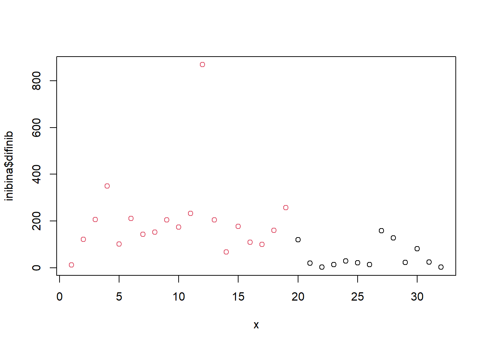
3.2.3 Generalized Linear Models
Treinando e avalaindo o modelo:
modLogist01 = glm(resposta ~ difinib, family = binomial, data = inibina)
summary(modLogist01)##
## Call:
## glm(formula = resposta ~ difinib, family = binomial, data = inibina)
##
## Deviance Residuals:
## Min 1Q Median 3Q Max
## -1.9770 -0.5594 0.1890 0.5589 2.0631
##
## Coefficients:
## Estimate Std. Error z value Pr(>|z|)
## (Intercept) -2.310455 0.947438 -2.439 0.01474 *
## difinib 0.025965 0.008561 3.033 0.00242 **
## ---
## Signif. codes: 0 '***' 0.001 '**' 0.01 '*' 0.05 '.' 0.1 ' ' 1
##
## (Dispersion parameter for binomial family taken to be 1)
##
## Null deviance: 43.230 on 31 degrees of freedom
## Residual deviance: 24.758 on 30 degrees of freedom
## AIC: 28.758
##
## Number of Fisher Scoring iterations: 6predito = predict.glm(modLogist01, type = "response")
classPred = ifelse(predito>0.5, "positiva", "negativa")
classPred = as.factor(classPred)
cm = confusionMatrix(classPred, inibina$resposta, positive = "positiva")
cm## Confusion Matrix and Statistics
##
## Reference
## Prediction negativa positiva
## negativa 10 2
## positiva 3 17
##
## Accuracy : 0.8438
## 95% CI : (0.6721, 0.9472)
## No Information Rate : 0.5938
## P-Value [Acc > NIR] : 0.002273
##
## Kappa : 0.6721
##
## Mcnemar's Test P-Value : 1.000000
##
## Sensitivity : 0.8947
## Specificity : 0.7692
## Pos Pred Value : 0.8500
## Neg Pred Value : 0.8333
## Prevalence : 0.5938
## Detection Rate : 0.5312
## Detection Prevalence : 0.6250
## Balanced Accuracy : 0.8320
##
## 'Positive' Class : positiva
## # Adiciona as métricas no df
model_eval[nrow(model_eval) + 1,] <- c("modLogist01", "glm", cm$overall['Accuracy'], cm$byClass['Sensitivity'], cm$byClass['Specificity'])Validação cruzada leave-one-out
trControl <- trainControl(method = "LOOCV")
modLogist02 <- train(resposta ~ difinib, method = "glm", data = inibina, family = binomial,
trControl = trControl, metric = "Accuracy")
summary(modLogist02)##
## Call:
## NULL
##
## Deviance Residuals:
## Min 1Q Median 3Q Max
## -1.9770 -0.5594 0.1890 0.5589 2.0631
##
## Coefficients:
## Estimate Std. Error z value Pr(>|z|)
## (Intercept) -2.310455 0.947438 -2.439 0.01474 *
## difinib 0.025965 0.008561 3.033 0.00242 **
## ---
## Signif. codes: 0 '***' 0.001 '**' 0.01 '*' 0.05 '.' 0.1 ' ' 1
##
## (Dispersion parameter for binomial family taken to be 1)
##
## Null deviance: 43.230 on 31 degrees of freedom
## Residual deviance: 24.758 on 30 degrees of freedom
## AIC: 28.758
##
## Number of Fisher Scoring iterations: 6predito = predict(modLogist02, newdata = inibina)
classPred = as.factor(predito)
cm = confusionMatrix(classPred, inibina$resposta, positive = "positiva")
cm## Confusion Matrix and Statistics
##
## Reference
## Prediction negativa positiva
## negativa 10 2
## positiva 3 17
##
## Accuracy : 0.8438
## 95% CI : (0.6721, 0.9472)
## No Information Rate : 0.5938
## P-Value [Acc > NIR] : 0.002273
##
## Kappa : 0.6721
##
## Mcnemar's Test P-Value : 1.000000
##
## Sensitivity : 0.8947
## Specificity : 0.7692
## Pos Pred Value : 0.8500
## Neg Pred Value : 0.8333
## Prevalence : 0.5938
## Detection Rate : 0.5312
## Detection Prevalence : 0.6250
## Balanced Accuracy : 0.8320
##
## 'Positive' Class : positiva
## # Adiciona as métricas no df
model_eval[nrow(model_eval) + 1,] <- c("modLogist02-LOOCV", "glm", cm$overall['Accuracy'], cm$byClass['Sensitivity'], cm$byClass['Specificity'])Treinar o modelo com o método LOOCV, neste conjunto de dados, não mudou o resultado.
3.2.4 Linear Discriminant Analysis - Fisher
Treinando e avalaindo o modelo:
modFisher01 = lda(resposta ~ difinib, data = inibina, prior = c(0.5, 0.5))
predito = predict(modFisher01)
classPred = predito$class
cm = confusionMatrix(classPred, inibina$resposta, positive = "positiva")
cm## Confusion Matrix and Statistics
##
## Reference
## Prediction negativa positiva
## negativa 11 6
## positiva 2 13
##
## Accuracy : 0.75
## 95% CI : (0.566, 0.8854)
## No Information Rate : 0.5938
## P-Value [Acc > NIR] : 0.04978
##
## Kappa : 0.5058
##
## Mcnemar's Test P-Value : 0.28884
##
## Sensitivity : 0.6842
## Specificity : 0.8462
## Pos Pred Value : 0.8667
## Neg Pred Value : 0.6471
## Prevalence : 0.5938
## Detection Rate : 0.4062
## Detection Prevalence : 0.4688
## Balanced Accuracy : 0.7652
##
## 'Positive' Class : positiva
## # Adiciona as métricas no df
model_eval[nrow(model_eval) + 1,] <- c("modFisher01-prior 0.5 / 0.5", "lda", cm$overall['Accuracy'], cm$byClass['Sensitivity'], cm$byClass['Specificity'])3.2.5 Bayes
Treinando e avalaindo o modelo:
inibina$resposta## [1] positiva positiva positiva positiva positiva positiva positiva positiva
## [9] positiva positiva positiva positiva positiva positiva positiva positiva
## [17] positiva positiva positiva negativa negativa negativa negativa negativa
## [25] negativa negativa negativa negativa negativa negativa negativa negativa
## Levels: negativa positivamodBayes01 = lda(resposta ~ difinib, data = inibina, prior = c(0.65, 0.35))
predito = predict(modBayes01)
classPred = predito$class
cm = confusionMatrix(classPred, inibina$resposta, positive = "positiva")
cm## Confusion Matrix and Statistics
##
## Reference
## Prediction negativa positiva
## negativa 13 13
## positiva 0 6
##
## Accuracy : 0.5938
## 95% CI : (0.4064, 0.763)
## No Information Rate : 0.5938
## P-Value [Acc > NIR] : 0.5755484
##
## Kappa : 0.2727
##
## Mcnemar's Test P-Value : 0.0008741
##
## Sensitivity : 0.3158
## Specificity : 1.0000
## Pos Pred Value : 1.0000
## Neg Pred Value : 0.5000
## Prevalence : 0.5938
## Detection Rate : 0.1875
## Detection Prevalence : 0.1875
## Balanced Accuracy : 0.6579
##
## 'Positive' Class : positiva
## # Adiciona as métricas no df
model_eval[nrow(model_eval) + 1,] <- c("modBayes01-prior 0.65 / 0.35", "lda", cm$overall['Accuracy'], cm$byClass['Sensitivity'], cm$byClass['Specificity'])table(classPred)## classPred
## negativa positiva
## 26 6print(inibina, n = 32)## # A tibble: 32 × 5
## ident resposta inibpre inibpos difinib
## <dbl> <fct> <dbl> <dbl> <dbl>
## 1 1 positiva 54.0 65.9 11.9
## 2 2 positiva 159. 281. 122.
## 3 3 positiva 98.3 305. 207.
## 4 4 positiva 85.3 434. 349.
## 5 5 positiva 128. 229. 101.
## 6 6 positiva 144. 354. 210.
## 7 7 positiva 111. 254. 143.
## 8 8 positiva 47.5 199. 152.
## 9 9 positiva 123. 328. 205.
## 10 10 positiva 166. 339. 174.
## 11 11 positiva 145. 377. 232.
## 12 12 positiva 186. 1055. 869.
## 13 13 positiva 149. 354. 204.
## 14 14 positiva 33.3 100. 66.8
## 15 15 positiva 182. 358. 177.
## 16 16 positiva 58.4 168. 110.
## 17 17 positiva 128. 228. 100.
## 18 18 positiva 153. 312. 159.
## 19 19 positiva 149. 406. 257.
## 20 20 negativa 81 201. 120.
## 21 21 negativa 24.7 45.2 20.4
## 22 22 negativa 3.02 6.03 3.01
## 23 23 negativa 4.27 17.8 13.5
## 24 24 negativa 99.3 128. 28.6
## 25 25 negativa 108. 129. 21.1
## 26 26 negativa 7.36 21.3 13.9
## 27 27 negativa 161. 320. 158.
## 28 28 negativa 184. 311. 127.
## 29 29 negativa 23.1 45.6 22.5
## 30 30 negativa 111. 192. 81.0
## 31 31 negativa 106. 131. 24.8
## 32 32 negativa 3.98 6.46 2.483.2.5.1 Naive Bayes
Treinando e avalaindo o modelo:
modNaiveBayes01 = naiveBayes(resposta ~ difinib, data = inibina)
predito = predict(modNaiveBayes01, inibina)
cm = confusionMatrix(predito, inibina$resposta, positive = "positiva")
cm## Confusion Matrix and Statistics
##
## Reference
## Prediction negativa positiva
## negativa 11 5
## positiva 2 14
##
## Accuracy : 0.7812
## 95% CI : (0.6003, 0.9072)
## No Information Rate : 0.5938
## P-Value [Acc > NIR] : 0.02102
##
## Kappa : 0.5625
##
## Mcnemar's Test P-Value : 0.44969
##
## Sensitivity : 0.7368
## Specificity : 0.8462
## Pos Pred Value : 0.8750
## Neg Pred Value : 0.6875
## Prevalence : 0.5938
## Detection Rate : 0.4375
## Detection Prevalence : 0.5000
## Balanced Accuracy : 0.7915
##
## 'Positive' Class : positiva
## # Adiciona as métricas no df
model_eval[nrow(model_eval) + 1,] <- c("modNaiveBayes01", "naiveBayes", cm$overall['Accuracy'], cm$byClass['Sensitivity'], cm$byClass['Specificity'])3.2.6 Decison tree
Treinando e avalaindo o modelo:
modArvDec01 = rpart(resposta ~ difinib, data = inibina)
prp(modArvDec01, faclen=0,
extra=1,
roundint=F,
digits=5)
predito = predict(modArvDec01, type = "class")
cm = confusionMatrix(predito, inibina$resposta, positive = "positiva")
cm## Confusion Matrix and Statistics
##
## Reference
## Prediction negativa positiva
## negativa 9 1
## positiva 4 18
##
## Accuracy : 0.8438
## 95% CI : (0.6721, 0.9472)
## No Information Rate : 0.5938
## P-Value [Acc > NIR] : 0.002273
##
## Kappa : 0.6639
##
## Mcnemar's Test P-Value : 0.371093
##
## Sensitivity : 0.9474
## Specificity : 0.6923
## Pos Pred Value : 0.8182
## Neg Pred Value : 0.9000
## Prevalence : 0.5938
## Detection Rate : 0.5625
## Detection Prevalence : 0.6875
## Balanced Accuracy : 0.8198
##
## 'Positive' Class : positiva
## # Adiciona as métricas no df
model_eval[nrow(model_eval) + 1,] <- c("modArvDec01", "rpart", cm$overall['Accuracy'], cm$byClass['Sensitivity'], cm$byClass['Specificity'])3.2.7 SVM
Treinando e avalaindo o modelo:
modSVM01 = svm(resposta ~ difinib, data = inibina, kernel = "linear")
predito = predict(modSVM01, type = "class")
cm = confusionMatrix(predito, inibina$resposta, positive = "positiva")
cm## Confusion Matrix and Statistics
##
## Reference
## Prediction negativa positiva
## negativa 10 2
## positiva 3 17
##
## Accuracy : 0.8438
## 95% CI : (0.6721, 0.9472)
## No Information Rate : 0.5938
## P-Value [Acc > NIR] : 0.002273
##
## Kappa : 0.6721
##
## Mcnemar's Test P-Value : 1.000000
##
## Sensitivity : 0.8947
## Specificity : 0.7692
## Pos Pred Value : 0.8500
## Neg Pred Value : 0.8333
## Prevalence : 0.5938
## Detection Rate : 0.5312
## Detection Prevalence : 0.6250
## Balanced Accuracy : 0.8320
##
## 'Positive' Class : positiva
## # Adiciona as métricas no df
model_eval[nrow(model_eval) + 1,] <- c("modSVM01", "svm", cm$overall['Accuracy'], cm$byClass['Sensitivity'], cm$byClass['Specificity'])3.2.8 Neural network
Treinando e avalaindo o modelo:
modRedNeural01 = neuralnet(resposta ~ difinib, data = inibina, hidden = c(2,4,3))
plot(modRedNeural01)
ypred = neuralnet::compute(modRedNeural01, inibina)
yhat = ypred$net.result
yhat = round(yhat)
yhat=data.frame("yhat"=ifelse(max.col(yhat[ ,1:2])==1, "negativa", "positiva"))
cm = confusionMatrix(as.factor(yhat$yhat), inibina$resposta)
cm## Confusion Matrix and Statistics
##
## Reference
## Prediction negativa positiva
## negativa 11 1
## positiva 2 18
##
## Accuracy : 0.9062
## 95% CI : (0.7498, 0.9802)
## No Information Rate : 0.5938
## P-Value [Acc > NIR] : 0.000105
##
## Kappa : 0.8033
##
## Mcnemar's Test P-Value : 1.000000
##
## Sensitivity : 0.8462
## Specificity : 0.9474
## Pos Pred Value : 0.9167
## Neg Pred Value : 0.9000
## Prevalence : 0.4062
## Detection Rate : 0.3438
## Detection Prevalence : 0.3750
## Balanced Accuracy : 0.8968
##
## 'Positive' Class : negativa
## # Adiciona as métricas no df
model_eval[nrow(model_eval) + 1,] <- c("modRedNeural01", "neuralnet", cm$overall['Accuracy'], cm$byClass['Sensitivity'], cm$byClass['Specificity'])3.2.9 KNN
Treinando e avalaindo o modelo:
Para \(k = 3\):
modKnn3_01 = knn3(resposta ~ difinib, data = inibina, k = 3)
predito = predict(modKnn3_01, inibina, type = "class")
cm = confusionMatrix(predito, inibina$resposta, positive = "positiva")
# Adiciona as métricas no df
model_eval[nrow(model_eval) + 1,] <- c("modKnn3_01-k=3", "knn3", cm$overall['Accuracy'], cm$byClass['Sensitivity'], cm$byClass['Specificity'])Para \(k = 5\):
modKnn5_01 = knn3(resposta ~ difinib, data = inibina, k = 5)
predito = predict(modKnn5_01, inibina, type = "class")
cm = confusionMatrix(predito, inibina$resposta, positive = "positiva")
cm## Confusion Matrix and Statistics
##
## Reference
## Prediction negativa positiva
## negativa 9 1
## positiva 4 18
##
## Accuracy : 0.8438
## 95% CI : (0.6721, 0.9472)
## No Information Rate : 0.5938
## P-Value [Acc > NIR] : 0.002273
##
## Kappa : 0.6639
##
## Mcnemar's Test P-Value : 0.371093
##
## Sensitivity : 0.9474
## Specificity : 0.6923
## Pos Pred Value : 0.8182
## Neg Pred Value : 0.9000
## Prevalence : 0.5938
## Detection Rate : 0.5625
## Detection Prevalence : 0.6875
## Balanced Accuracy : 0.8198
##
## 'Positive' Class : positiva
## # Adiciona as métricas no df
model_eval[nrow(model_eval) + 1,] <- c("modKnn5_01-k=5", "knn3", cm$overall['Accuracy'], cm$byClass['Sensitivity'], cm$byClass['Specificity'])3.2.10 Comparando os modelos
| Model | Algorithm | Accuracy | Sensitivity | Specificity |
|---|---|---|---|---|
| modLogist01 | glm | 0.84375 | 0.894736842105263 | 0.769230769230769 |
| modLogist02-LOOCV | glm | 0.84375 | 0.894736842105263 | 0.769230769230769 |
| modFisher01-prior 0.5 / 0.5 | lda | 0.75 | 0.684210526315789 | 0.846153846153846 |
| modBayes01-prior 0.65 / 0.35 | lda | 0.59375 | 0.315789473684211 | 1 |
| modNaiveBayes01 | naiveBayes | 0.78125 | 0.736842105263158 | 0.846153846153846 |
| modArvDec01 | rpart | 0.84375 | 0.947368421052632 | 0.692307692307692 |
| modSVM01 | svm | 0.84375 | 0.894736842105263 | 0.769230769230769 |
| modRedNeural01 | neuralnet | 0.90625 | 0.846153846153846 | 0.947368421052632 |
| modKnn3_01-k=3 | knn3 | 0.875 | 0.894736842105263 | 0.846153846153846 |
| modKnn5_01-k=5 | knn3 | 0.84375 | 0.947368421052632 | 0.692307692307692 |
Os modelos modLogist01, modFisher01 com \(prior = 0.5, 0.5\), modArvDec01 e modKnn3_01 com \(k=3\) tiveram performance muito parecidas no conjunto de dados. Uma possível escolha seria o modKnn3_01 que combinado obteve melhor acurácia, sensibilidade e especificidade.
3.2.11 Agrupamento
inibinaS = inibina[, 3:5]
d <- dist(inibinaS, method = "maximum")
grup = hclust(d, method = "ward.D")
groups <- cutree(grup, k=3)
plot(grup, cex = 0.6)
rect.hclust(grup , k = 3, border = 2:6)
abline(h = 3, col = 'red')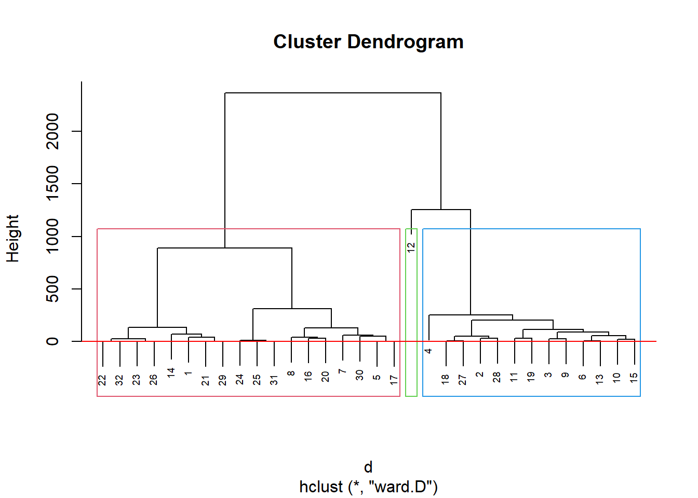
table(groups, inibina$resposta)##
## groups negativa positiva
## 1 11 7
## 2 2 11
## 3 0 1Como indicado no dendograma, podemos dividir em 3 grupos:
km1 = kmeans(inibinaS, 3)
p1 = fviz_cluster(km1, data=inibinaS,
palette = c("#2E9FDF", "#FC4E07", "#E7B800", "#E7B700", "#D7B700"),
star.plot=FALSE,
# repel=TRUE,
ggtheme=theme_bw())
p1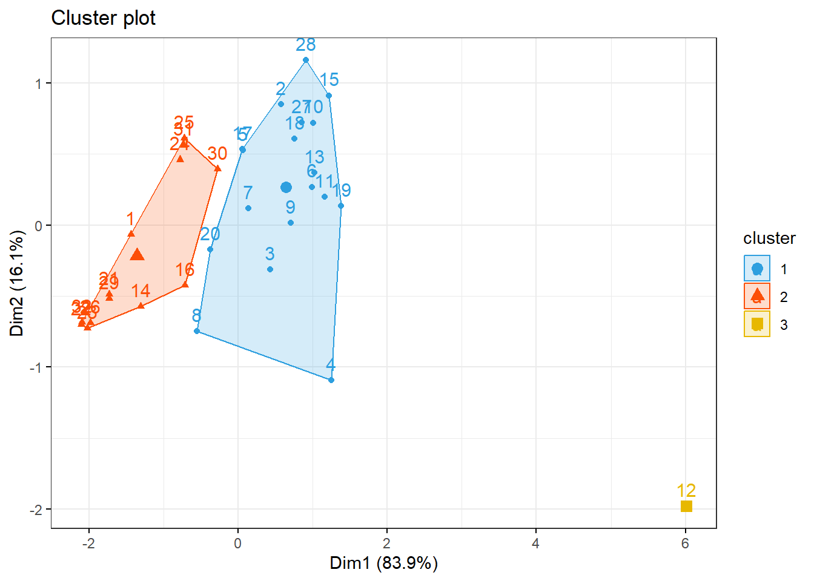
groups = km1$cluster
table(groups, inibina$resposta)##
## groups negativa positiva
## 1 3 15
## 2 10 3
## 3 0 13.3 Ultrassom para medir deslocamento do disco
Os dados disponíveis aqui foram extraídos de um estudo realizado no Hospital Universitário da Universidade de São Paulo com o objetivo de avaliar se algumas medidas obtidas ultrassonograficamente poderiam ser utilizadas como substitutas de medidas obtidas por métodos de ressonância magnética, considerada como padrão ouro para avaliação do deslocamento do disco da articulação temporomandibular (referido simplesmente como disco).
3.3.1 Pacotes
Pacotes necessários para estes exercícios:
library(readxl)
library(tidyverse)
library(readxl)
library(ggthemes)
library(plotly)
library(knitr)
library(kableExtra)
library(rpart)
library(rpart.plot)
library(caret)
library(MASS)
library(httr)
library(readxl)
library(tibble)
library(e1071)
library(neuralnet)
library(factoextra)
library(ggpubr)3.3.2 Conjunto de dados
#GET("http://www.ime.usp.br/~jmsinger/MorettinSinger/disco.xls", write_disk(tf <- tempfile(fileext = ".xls")))
httr::GET("http://www.ime.usp.br/~jmsinger/MorettinSinger/disco.xls", httr::write_disk("../dados/disco.xls", overwrite = TRUE))## Response [https://www.ime.usp.br/~jmsinger/MorettinSinger/disco.xls]
## Date: 2022-12-14 00:18
## Status: 200
## Content-Type: application/vnd.ms-excel
## Size: 11.3 kB
## <ON DISK> G:\onedrive\obsidian\adsantos\Mestrado\BD\trabalhos\caderno-bd\dados\disco.xlsdisco <- read_excel("../dados/disco.xls")Número de observações 104.
3.3.2.1 Categorizando a variável de deslocamento.
disco$sumdistancia = disco$distanciaA + disco$distanciaF
disco$deslocamento = as.factor(disco$deslocamento)plot(disco$sumdistancia ~ disco$deslocamento)
kable(disco) %>%
kable_styling(latex_options = "striped")| deslocamento | distanciaA | distanciaF | sumdistancia |
|---|---|---|---|
| 0 | 2.2 | 1.4 | 3.6 |
| 0 | 2.4 | 1.2 | 3.6 |
| 0 | 2.6 | 2.0 | 4.6 |
| 1 | 3.5 | 1.8 | 5.3 |
| 0 | 1.3 | 1.0 | 2.3 |
| 1 | 2.8 | 1.1 | 3.9 |
| 0 | 1.5 | 1.2 | 2.7 |
| 0 | 2.6 | 1.1 | 3.7 |
| 0 | 1.2 | 0.6 | 1.8 |
| 0 | 1.7 | 1.5 | 3.2 |
| 0 | 1.3 | 1.2 | 2.5 |
| 0 | 1.2 | 1.0 | 2.2 |
| 1 | 4.0 | 2.5 | 6.5 |
| 0 | 1.2 | 1.0 | 2.2 |
| 1 | 3.1 | 1.7 | 4.8 |
| 1 | 2.6 | 0.6 | 3.2 |
| 0 | 1.8 | 0.8 | 2.6 |
| 0 | 1.2 | 1.0 | 2.2 |
| 0 | 1.9 | 1.0 | 2.9 |
| 0 | 1.2 | 0.9 | 2.1 |
| 1 | 1.7 | 0.9 | 2.6 |
| 0 | 1.2 | 0.8 | 2.0 |
| 1 | 3.9 | 3.2 | 7.1 |
| 0 | 1.7 | 1.1 | 2.8 |
| 0 | 1.4 | 1.0 | 2.4 |
| 0 | 1.6 | 1.3 | 2.9 |
| 0 | 1.3 | 0.5 | 1.8 |
| 0 | 1.7 | 0.7 | 2.4 |
| 1 | 2.6 | 1.8 | 4.4 |
| 0 | 1.5 | 1.5 | 3.0 |
| 0 | 1.8 | 1.4 | 3.2 |
| 0 | 1.2 | 0.9 | 2.1 |
| 0 | 1.9 | 1.0 | 2.9 |
| 0 | 2.3 | 1.0 | 3.3 |
| 0 | 1.6 | 1.0 | 2.6 |
| 0 | 1.0 | 0.6 | 1.6 |
| 0 | 1.6 | 1.3 | 2.9 |
| 1 | 4.3 | 2.3 | 6.6 |
| 0 | 2.1 | 1.0 | 3.1 |
| 0 | 1.6 | 0.9 | 2.5 |
| 0 | 2.3 | 1.2 | 3.5 |
| 0 | 2.4 | 1.3 | 3.7 |
| 0 | 2.0 | 1.1 | 3.1 |
| 0 | 1.8 | 1.2 | 3.0 |
| 0 | 1.4 | 1.9 | 3.3 |
| 0 | 1.5 | 1.3 | 2.8 |
| 0 | 2.2 | 1.2 | 3.4 |
| 0 | 1.6 | 2.0 | 3.6 |
| 0 | 1.5 | 1.1 | 2.6 |
| 0 | 1.2 | 0.7 | 1.9 |
| 0 | 1.5 | 0.8 | 2.3 |
| 0 | 1.8 | 1.1 | 2.9 |
| 0 | 0.9 | 0.8 | 1.7 |
| 0 | 1.1 | 0.9 | 2.0 |
| 0 | 1.4 | 1.1 | 2.5 |
| 0 | 1.6 | 0.8 | 2.4 |
| 0 | 2.1 | 1.3 | 3.4 |
| 0 | 1.8 | 0.9 | 2.7 |
| 0 | 2.4 | 0.9 | 3.3 |
| 0 | 2.0 | 2.3 | 4.3 |
| 0 | 2.0 | 2.3 | 4.3 |
| 0 | 2.4 | 2.9 | 5.3 |
| 1 | 2.7 | 2.4 | 5.1 |
| 1 | 1.9 | 2.7 | 4.6 |
| 1 | 2.4 | 1.3 | 3.7 |
| 1 | 2.1 | 0.8 | 2.9 |
| 0 | 0.8 | 1.3 | 2.1 |
| 1 | 0.8 | 2.0 | 2.8 |
| 0 | 0.5 | 0.6 | 1.1 |
| 0 | 1.5 | 0.7 | 2.2 |
| 1 | 2.9 | 1.6 | 4.5 |
| 0 | 1.4 | 1.2 | 2.6 |
| 1 | 3.2 | 0.5 | 3.7 |
| 0 | 1.2 | 1.2 | 2.4 |
| 1 | 2.1 | 1.6 | 3.7 |
| 1 | 1.4 | 1.5 | 2.9 |
| 0 | 1.5 | 1.4 | 2.9 |
| 0 | 1.6 | 1.5 | 3.1 |
| 1 | 4.9 | 1.2 | 6.1 |
| 0 | 1.1 | 1.1 | 2.2 |
| 1 | 2.0 | 1.3 | 3.3 |
| 0 | 1.5 | 2.2 | 3.7 |
| 0 | 1.7 | 1.0 | 2.7 |
| 0 | 1.9 | 1.4 | 3.3 |
| 1 | 2.5 | 3.1 | 5.6 |
| 0 | 1.4 | 1.5 | 2.9 |
| 1 | 2.5 | 1.8 | 4.3 |
| 1 | 2.3 | 1.6 | 3.9 |
| 0 | 1.2 | 0.4 | 1.6 |
| 0 | 1.0 | 1.1 | 2.1 |
| 1 | 2.9 | 2.4 | 5.3 |
| 1 | 2.5 | 3.3 | 5.8 |
| 0 | 1.4 | 1.1 | 2.5 |
| 0 | 1.5 | 1.3 | 2.8 |
| 0 | 0.8 | 2.0 | 2.8 |
| 0 | 2.0 | 2.1 | 4.1 |
| 1 | 3.1 | 2.2 | 5.3 |
| 1 | 3.1 | 2.1 | 5.2 |
| 0 | 1.7 | 1.2 | 2.9 |
| 0 | 1.6 | 0.5 | 2.1 |
| 0 | 1.4 | 1.1 | 2.5 |
| 0 | 1.6 | 1.0 | 2.6 |
| 1 | 2.3 | 1.6 | 3.9 |
| 1 | 2.2 | 1.8 | 4.0 |
summary(disco)## deslocamento distanciaA distanciaF sumdistancia
## 0:75 Min. :0.500 Min. :0.400 Min. :1.100
## 1:29 1st Qu.:1.400 1st Qu.:1.000 1st Qu.:2.500
## Median :1.700 Median :1.200 Median :2.900
## Mean :1.907 Mean :1.362 Mean :3.268
## 3rd Qu.:2.300 3rd Qu.:1.600 3rd Qu.:3.700
## Max. :4.900 Max. :3.300 Max. :7.100O desvio padrão da soma das distâncias é \(1.1839759\).
3.3.3 Generalized Linear Models
Treinando o modelo:
modLogist01 = glm(deslocamento ~ sumdistancia, family = binomial, data = disco)
summary(modLogist01)##
## Call:
## glm(formula = deslocamento ~ sumdistancia, family = binomial,
## data = disco)
##
## Deviance Residuals:
## Min 1Q Median 3Q Max
## -2.2291 -0.4957 -0.3182 0.1560 2.3070
##
## Coefficients:
## Estimate Std. Error z value Pr(>|z|)
## (Intercept) -7.3902 1.3740 -5.379 7.51e-08 ***
## sumdistancia 1.8467 0.3799 4.861 1.17e-06 ***
## ---
## Signif. codes: 0 '***' 0.001 '**' 0.01 '*' 0.05 '.' 0.1 ' ' 1
##
## (Dispersion parameter for binomial family taken to be 1)
##
## Null deviance: 123.107 on 103 degrees of freedom
## Residual deviance: 72.567 on 102 degrees of freedom
## AIC: 76.567
##
## Number of Fisher Scoring iterations: 5Avaliando o modelo:
predito = predict.glm(modLogist01, type = "response")
classPred = ifelse(predito>0.5, "0", "1")
classPred = as.factor(classPred)
cm = confusionMatrix(classPred, disco$deslocamento, positive = "0")
cm## Confusion Matrix and Statistics
##
## Reference
## Prediction 0 1
## 0 5 16
## 1 70 13
##
## Accuracy : 0.1731
## 95% CI : (0.1059, 0.2597)
## No Information Rate : 0.7212
## P-Value [Acc > NIR] : 1
##
## Kappa : -0.3088
##
## Mcnemar's Test P-Value : 1.096e-08
##
## Sensitivity : 0.06667
## Specificity : 0.44828
## Pos Pred Value : 0.23810
## Neg Pred Value : 0.15663
## Prevalence : 0.72115
## Detection Rate : 0.04808
## Detection Prevalence : 0.20192
## Balanced Accuracy : 0.25747
##
## 'Positive' Class : 0
## # Adiciona as métricas no df
model_eval[nrow(model_eval) + 1,] <- c("modLogist01", "glm", cm$overall['Accuracy'], cm$byClass['Sensitivity'], cm$byClass['Specificity'])Validação cruzada leave-one-out
trControl <- trainControl(method = "LOOCV")
modLogist02 <- train(deslocamento ~ sumdistancia, method = "glm", data = disco, family = binomial,
trControl = trControl, metric = "Accuracy")
summary(modLogist02)##
## Call:
## NULL
##
## Deviance Residuals:
## Min 1Q Median 3Q Max
## -2.2291 -0.4957 -0.3182 0.1560 2.3070
##
## Coefficients:
## Estimate Std. Error z value Pr(>|z|)
## (Intercept) -7.3902 1.3740 -5.379 7.51e-08 ***
## sumdistancia 1.8467 0.3799 4.861 1.17e-06 ***
## ---
## Signif. codes: 0 '***' 0.001 '**' 0.01 '*' 0.05 '.' 0.1 ' ' 1
##
## (Dispersion parameter for binomial family taken to be 1)
##
## Null deviance: 123.107 on 103 degrees of freedom
## Residual deviance: 72.567 on 102 degrees of freedom
## AIC: 76.567
##
## Number of Fisher Scoring iterations: 5predito = predict(modLogist02, newdata = disco)
classPred = as.factor(predito)
cm = confusionMatrix(classPred, disco$deslocamento, positive = "0")
cm## Confusion Matrix and Statistics
##
## Reference
## Prediction 0 1
## 0 70 13
## 1 5 16
##
## Accuracy : 0.8269
## 95% CI : (0.7403, 0.8941)
## No Information Rate : 0.7212
## P-Value [Acc > NIR] : 0.00857
##
## Kappa : 0.5299
##
## Mcnemar's Test P-Value : 0.09896
##
## Sensitivity : 0.9333
## Specificity : 0.5517
## Pos Pred Value : 0.8434
## Neg Pred Value : 0.7619
## Prevalence : 0.7212
## Detection Rate : 0.6731
## Detection Prevalence : 0.7981
## Balanced Accuracy : 0.7425
##
## 'Positive' Class : 0
## # Adiciona as métricas no df
model_eval[nrow(model_eval) + 1,] <- c("modLogist02-LOOCV", "glm", cm$overall['Accuracy'], cm$byClass['Sensitivity'], cm$byClass['Specificity'])kable(model_eval) %>%
kable_styling(latex_options = "striped")| Model | Algorithm | Accuracy | Sensitivity | Specificity |
|---|---|---|---|---|
| modLogist01 | glm | 0.173076923076923 | 0.0666666666666667 | 0.448275862068966 |
| modLogist02-LOOCV | glm | 0.826923076923077 | 0.933333333333333 | 0.551724137931034 |
Treinar o modelo com o método LOOCV melhorou consideravelmente todas as métricas do modelo.
3.3.4 Linear Discriminant Analysis - Fisher
Treinando e avalaindo o modelo:
modFisher01 = lda(deslocamento ~ sumdistancia, data = disco, prior = c(0.5, 0.5))
predito = predict(modFisher01)
classPred = predito$class
cm = confusionMatrix(classPred, disco$deslocamento, positive = "0")
cm## Confusion Matrix and Statistics
##
## Reference
## Prediction 0 1
## 0 67 6
## 1 8 23
##
## Accuracy : 0.8654
## 95% CI : (0.7845, 0.9244)
## No Information Rate : 0.7212
## P-Value [Acc > NIR] : 0.0003676
##
## Kappa : 0.6722
##
## Mcnemar's Test P-Value : 0.7892680
##
## Sensitivity : 0.8933
## Specificity : 0.7931
## Pos Pred Value : 0.9178
## Neg Pred Value : 0.7419
## Prevalence : 0.7212
## Detection Rate : 0.6442
## Detection Prevalence : 0.7019
## Balanced Accuracy : 0.8432
##
## 'Positive' Class : 0
## # Adiciona as métricas no df
model_eval[nrow(model_eval) + 1,] <- c("modFisher01-prior 0.5 / 0.5", "lda", cm$overall['Accuracy'], cm$byClass['Sensitivity'], cm$byClass['Specificity'])3.3.5 Bayes
Treinando e avalaindo o modelo:
modBayes01 = lda(deslocamento ~ sumdistancia, data = disco, prior = c(0.65, 0.35))
predito = predict(modBayes01)
classPred = predito$class
cm = confusionMatrix(classPred, disco$deslocamento, positive = "0")
cm## Confusion Matrix and Statistics
##
## Reference
## Prediction 0 1
## 0 70 12
## 1 5 17
##
## Accuracy : 0.8365
## 95% CI : (0.7512, 0.9018)
## No Information Rate : 0.7212
## P-Value [Acc > NIR] : 0.004313
##
## Kappa : 0.5611
##
## Mcnemar's Test P-Value : 0.145610
##
## Sensitivity : 0.9333
## Specificity : 0.5862
## Pos Pred Value : 0.8537
## Neg Pred Value : 0.7727
## Prevalence : 0.7212
## Detection Rate : 0.6731
## Detection Prevalence : 0.7885
## Balanced Accuracy : 0.7598
##
## 'Positive' Class : 0
## # Adiciona as métricas no df
model_eval[nrow(model_eval) + 1,] <- c("modBayes01-prior 0.65 / 0.35", "lda", cm$overall['Accuracy'], cm$byClass['Sensitivity'], cm$byClass['Specificity'])table(classPred)## classPred
## 0 1
## 82 22print(disco, n = 32)## # A tibble: 104 × 4
## deslocamento distanciaA distanciaF sumdistancia
## <fct> <dbl> <dbl> <dbl>
## 1 0 2.2 1.4 3.6
## 2 0 2.4 1.2 3.6
## 3 0 2.6 2 4.6
## 4 1 3.5 1.8 5.3
## 5 0 1.3 1 2.3
## 6 1 2.8 1.1 3.9
## 7 0 1.5 1.2 2.7
## 8 0 2.6 1.1 3.7
## 9 0 1.2 0.6 1.8
## 10 0 1.7 1.5 3.2
## 11 0 1.3 1.2 2.5
## 12 0 1.2 1 2.2
## 13 1 4 2.5 6.5
## 14 0 1.2 1 2.2
## 15 1 3.1 1.7 4.8
## 16 1 2.6 0.6 3.2
## 17 0 1.8 0.8 2.6
## 18 0 1.2 1 2.2
## 19 0 1.9 1 2.9
## 20 0 1.2 0.9 2.1
## 21 1 1.7 0.9 2.6
## 22 0 1.2 0.8 2
## 23 1 3.9 3.2 7.1
## 24 0 1.7 1.1 2.8
## 25 0 1.4 1 2.4
## 26 0 1.6 1.3 2.9
## 27 0 1.3 0.5 1.8
## 28 0 1.7 0.7 2.4
## 29 1 2.6 1.8 4.4
## 30 0 1.5 1.5 3
## 31 0 1.8 1.4 3.2
## 32 0 1.2 0.9 2.1
## # … with 72 more rows3.3.6 Naive Bayes
Treinando e avalaindo o modelo:
modNaiveBayes01 = naiveBayes(deslocamento ~ sumdistancia, data = disco)
predito = predict(modNaiveBayes01, disco)
cm = confusionMatrix(predito, disco$deslocamento, positive = "0")
cm## Confusion Matrix and Statistics
##
## Reference
## Prediction 0 1
## 0 70 13
## 1 5 16
##
## Accuracy : 0.8269
## 95% CI : (0.7403, 0.8941)
## No Information Rate : 0.7212
## P-Value [Acc > NIR] : 0.00857
##
## Kappa : 0.5299
##
## Mcnemar's Test P-Value : 0.09896
##
## Sensitivity : 0.9333
## Specificity : 0.5517
## Pos Pred Value : 0.8434
## Neg Pred Value : 0.7619
## Prevalence : 0.7212
## Detection Rate : 0.6731
## Detection Prevalence : 0.7981
## Balanced Accuracy : 0.7425
##
## 'Positive' Class : 0
## # Adiciona as métricas no df
model_eval[nrow(model_eval) + 1,] <- c("modNaiveBayes01", "naiveBayes", cm$overall['Accuracy'], cm$byClass['Sensitivity'], cm$byClass['Specificity'])3.3.7 Decison tree
Treinando e avalaindo o modelo:
modArvDec01 = rpart(deslocamento ~ sumdistancia, data = disco)
prp(modArvDec01, faclen=0, #use full names for factor labels
extra=1, #display number of observations for each terminal node
roundint=F, #don't round to integers in output
digits=5)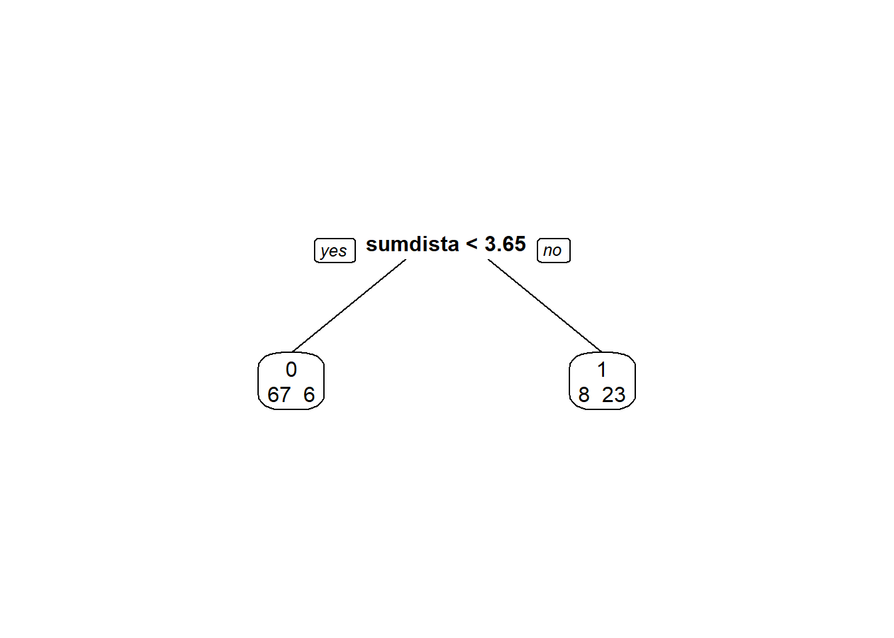
predito = predict(modArvDec01, type = "class")
cm = confusionMatrix(predito, disco$deslocamento, positive = "0")
cm## Confusion Matrix and Statistics
##
## Reference
## Prediction 0 1
## 0 67 6
## 1 8 23
##
## Accuracy : 0.8654
## 95% CI : (0.7845, 0.9244)
## No Information Rate : 0.7212
## P-Value [Acc > NIR] : 0.0003676
##
## Kappa : 0.6722
##
## Mcnemar's Test P-Value : 0.7892680
##
## Sensitivity : 0.8933
## Specificity : 0.7931
## Pos Pred Value : 0.9178
## Neg Pred Value : 0.7419
## Prevalence : 0.7212
## Detection Rate : 0.6442
## Detection Prevalence : 0.7019
## Balanced Accuracy : 0.8432
##
## 'Positive' Class : 0
## # Adiciona as métricas no df
model_eval[nrow(model_eval) + 1,] <- c("modArvDec01", "rpart", cm$overall['Accuracy'], cm$byClass['Sensitivity'], cm$byClass['Specificity'])x = 1:nrow(disco)
plot(disco$sumdistancia ~ x, col = disco$deslocamento)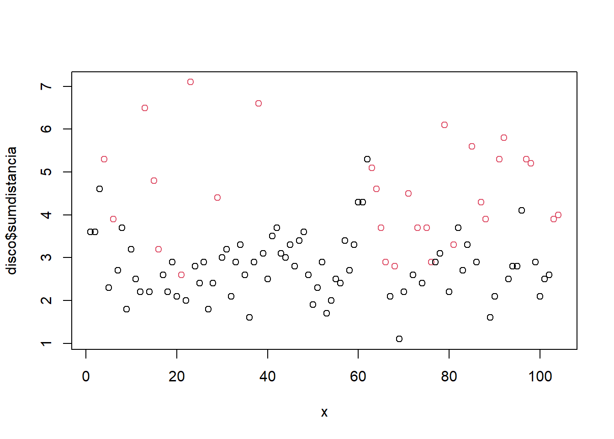
3.3.8 SVM
Treinando e avalaindo o modelo:
modSVM01 = svm(deslocamento ~ sumdistancia, data = disco, kernel = "linear")
predito = predict(modSVM01, type = "class")
cm = confusionMatrix(predito, disco$deslocamento, positive = "0")
# Adiciona as métricas no df
model_eval[nrow(model_eval) + 1,] <- c("modSVM01", "svm", cm$overall['Accuracy'], cm$byClass['Sensitivity'], cm$byClass['Specificity'])3.3.9 Neural Network
Treinando e avalaindo o modelo:
modRedNeural01 = neuralnet(deslocamento ~ sumdistancia, data=disco, hidden = c(2,4,3))
plot(modRedNeural01)
ypred = neuralnet::compute(modRedNeural01, disco)
yhat = ypred$net.result
yhat = round(yhat)
yhat=data.frame("yhat"=ifelse(max.col(yhat[ ,1:2])==1, "0", "1"))
cm = confusionMatrix(as.factor(yhat$yhat), disco$deslocamento)
cm## Confusion Matrix and Statistics
##
## Reference
## Prediction 0 1
## 0 70 7
## 1 5 22
##
## Accuracy : 0.8846
## 95% CI : (0.8071, 0.9389)
## No Information Rate : 0.7212
## P-Value [Acc > NIR] : 4.877e-05
##
## Kappa : 0.7069
##
## Mcnemar's Test P-Value : 0.7728
##
## Sensitivity : 0.9333
## Specificity : 0.7586
## Pos Pred Value : 0.9091
## Neg Pred Value : 0.8148
## Prevalence : 0.7212
## Detection Rate : 0.6731
## Detection Prevalence : 0.7404
## Balanced Accuracy : 0.8460
##
## 'Positive' Class : 0
## # Adiciona as métricas no df
model_eval[nrow(model_eval) + 1,] <- c("modRedNeural01", "neuralnet", cm$overall['Accuracy'], cm$byClass['Sensitivity'], cm$byClass['Specificity'])3.3.10 KNN
Treinando e avalaindo o modelo:
Para \(k = 3\):
modKnn3_01 = knn3(deslocamento ~ sumdistancia, data=disco, k=3)
predito = predict(modKnn3_01, disco, type = "class")
cm = confusionMatrix(predito, disco$deslocamento, positive = "0")
# Adiciona as métricas no df
model_eval[nrow(model_eval) + 1,] <- c("modKnn3_01-k=3", "knn3", cm$overall['Accuracy'], cm$byClass['Sensitivity'], cm$byClass['Specificity'])Para \(k = 5\):
modKnn5_01 = knn3(deslocamento ~ sumdistancia, data=disco, k=5)
predito = predict(modKnn5_01, disco, type = "class")
cm = confusionMatrix(predito, disco$deslocamento, positive = "0")
cm## Confusion Matrix and Statistics
##
## Reference
## Prediction 0 1
## 0 68 9
## 1 7 20
##
## Accuracy : 0.8462
## 95% CI : (0.7622, 0.9094)
## No Information Rate : 0.7212
## P-Value [Acc > NIR] : 0.002035
##
## Kappa : 0.6092
##
## Mcnemar's Test P-Value : 0.802587
##
## Sensitivity : 0.9067
## Specificity : 0.6897
## Pos Pred Value : 0.8831
## Neg Pred Value : 0.7407
## Prevalence : 0.7212
## Detection Rate : 0.6538
## Detection Prevalence : 0.7404
## Balanced Accuracy : 0.7982
##
## 'Positive' Class : 0
## # Adiciona as métricas no df
model_eval[nrow(model_eval) + 1,] <- c("modKnn5_01-k=5", "knn3", cm$overall['Accuracy'], cm$byClass['Sensitivity'], cm$byClass['Specificity'])3.3.11 Comparando os modelos
| Model | Algorithm | Accuracy | Sensitivity | Specificity |
|---|---|---|---|---|
| modLogist01 | glm | 0.173076923076923 | 0.0666666666666667 | 0.448275862068966 |
| modLogist02-LOOCV | glm | 0.826923076923077 | 0.933333333333333 | 0.551724137931034 |
| modFisher01-prior 0.5 / 0.5 | lda | 0.865384615384615 | 0.893333333333333 | 0.793103448275862 |
| modBayes01-prior 0.65 / 0.35 | lda | 0.836538461538462 | 0.933333333333333 | 0.586206896551724 |
| modNaiveBayes01 | naiveBayes | 0.826923076923077 | 0.933333333333333 | 0.551724137931034 |
| modArvDec01 | rpart | 0.865384615384615 | 0.893333333333333 | 0.793103448275862 |
| modSVM01 | svm | 0.836538461538462 | 0.946666666666667 | 0.551724137931034 |
| modRedNeural01 | neuralnet | 0.884615384615385 | 0.933333333333333 | 0.758620689655172 |
| modKnn3_01-k=3 | knn3 | 0.884615384615385 | 0.96 | 0.689655172413793 |
| modKnn5_01-k=5 | knn3 | 0.846153846153846 | 0.906666666666667 | 0.689655172413793 |
Todos os modelos tiveram performance semelhante, com destaque para modFisher01 com \(prior 0.5, 0.5\).
3.3.12 Agrupamento
discoS = disco[, 2:3]
d <- dist(discoS, method = "maximum")
grup = hclust(d, method = "ward.D")
groups <- cutree(grup, k=3)
plot(grup, cex = 0.6)
rect.hclust(grup , k = 3, border = 2:6)
abline(h = 3, col = 'red')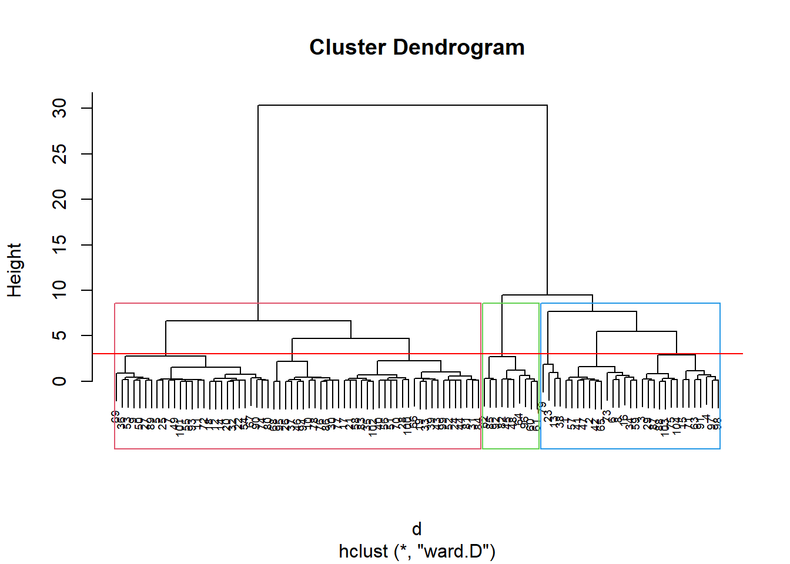
kable(sort(groups)) %>%
kable_styling(latex_options = "striped")| x |
|---|
| 1 |
| 1 |
| 1 |
| 1 |
| 1 |
| 1 |
| 1 |
| 1 |
| 1 |
| 1 |
| 1 |
| 1 |
| 1 |
| 1 |
| 1 |
| 1 |
| 1 |
| 1 |
| 1 |
| 1 |
| 1 |
| 1 |
| 1 |
| 1 |
| 1 |
| 1 |
| 1 |
| 1 |
| 1 |
| 1 |
| 1 |
| 2 |
| 2 |
| 2 |
| 2 |
| 2 |
| 2 |
| 2 |
| 2 |
| 2 |
| 2 |
| 2 |
| 2 |
| 2 |
| 2 |
| 2 |
| 2 |
| 2 |
| 2 |
| 2 |
| 2 |
| 2 |
| 2 |
| 2 |
| 2 |
| 2 |
| 2 |
| 2 |
| 2 |
| 2 |
| 2 |
| 2 |
| 2 |
| 2 |
| 2 |
| 2 |
| 2 |
| 2 |
| 2 |
| 2 |
| 2 |
| 2 |
| 2 |
| 2 |
| 2 |
| 2 |
| 2 |
| 2 |
| 2 |
| 2 |
| 2 |
| 2 |
| 2 |
| 2 |
| 2 |
| 2 |
| 2 |
| 2 |
| 2 |
| 2 |
| 2 |
| 2 |
| 2 |
| 2 |
| 3 |
| 3 |
| 3 |
| 3 |
| 3 |
| 3 |
| 3 |
| 3 |
| 3 |
| 3 |
Pelo dendograma temos 3 grupos:
km1 = kmeans(discoS, 3)
p1 = fviz_cluster(km1, data=discoS,
palette = c("#2E9FDF", "#FC4E07", "#E7B800", "#E7B700"),
star.plot=FALSE,
# repel=TRUE,
ggtheme=theme_bw())
p1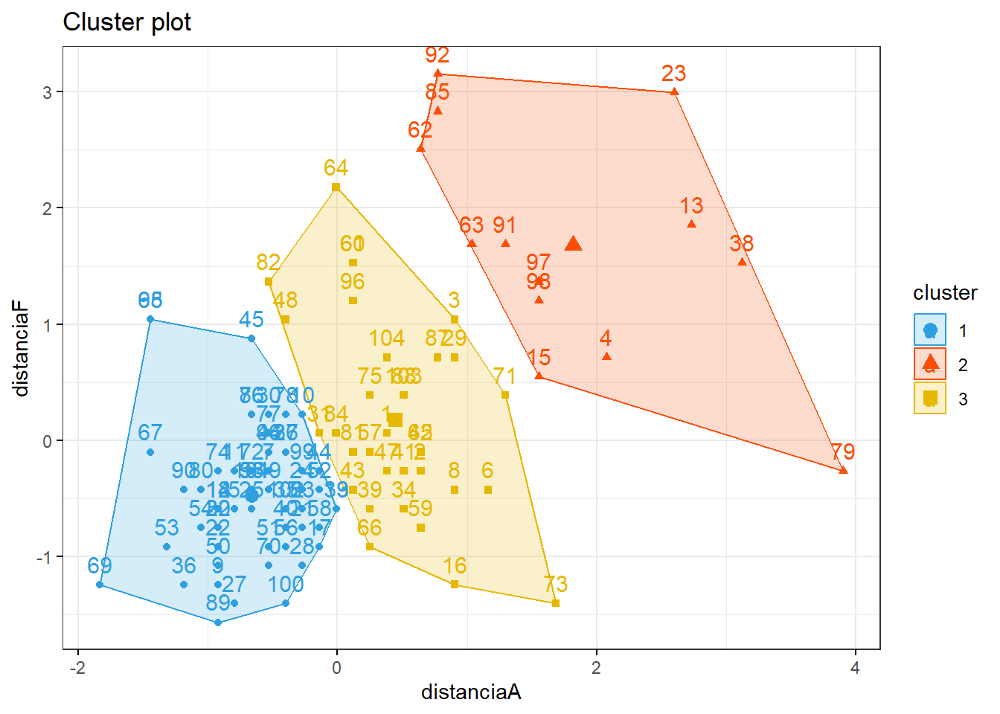
groups = km1$cluster
table(groups, disco$deslocamento)##
## groups 0 1
## 1 55 3
## 2 1 12
## 3 19 143.4 Classificação de tipos faciais
Os dados do arquivo tipofacial (disponível aqui) foram extraídos de um estudo odontológico realizado pelo Dr. Flávio Cotrim Vellini. Um dos objetivos era utilizar medidas entre diferentes pontos do crânio para caracterizar indivíduos com diferentes tipos faciais, a saber, braquicéfalos, mesocéfalos e dolicocéfalos (grupos). O conjunto de dados contém observações de 11 variáveis em 101 pacientes. Para efeitos didáticos, considere apenas a altura facial (altfac) e a profundidade facial (proffac) como variáveis preditoras.
3.4.1 Pacotes
Pacotes necessários para estes exercícios:
library(readxl)
library(tidyverse)
library(readxl)
library(ggthemes)
library(plotly)
library(knitr)
library(kableExtra)
library(rpart)
library(rpart.plot)
library(caret)
library(MASS)
library(httr)
library(readxl)
library(tibble)
library(e1071)
library(neuralnet)
library(factoextra)
library(ggpubr)
library(nnet)
library(modelr)3.4.2 Conjunto de dados
httr::GET("http://www.ime.usp.br/~jmsinger/MorettinSinger/tipofacial.xls", httr::write_disk("../dados/tipofacial.xls", overwrite = TRUE))## Response [https://www.ime.usp.br/~jmsinger/MorettinSinger/tipofacial.xls]
## Date: 2022-12-14 00:18
## Status: 200
## Content-Type: application/vnd.ms-excel
## Size: 20.5 kB
## <ON DISK> G:\onedrive\obsidian\adsantos\Mestrado\BD\trabalhos\caderno-bd\dados\tipofacial.xlstipofacial <- read_excel("../dados/tipofacial.xls")Número de observações 101.
3.4.2.1 Categorizando a variável de grupo.
# Considerar (altfac) e a profundidade facial (proffac) como variáveis preditoras.
tipofacial$sumfac = tipofacial$altfac + tipofacial$proffac
tipofacial$grupo = as.factor(tipofacial$grupo)plot(tipofacial$sumfac ~ tipofacial$grupo)
kable(tipofacial) %>%
kable_styling(latex_options = "striped")| paciente | sexo | grupo | idade | nsba | ns | sba | altfac | proffac | eixofac | planmand | arcomand | vert | sumfac |
|---|---|---|---|---|---|---|---|---|---|---|---|---|---|
| 10 | M | braq | 5.58 | 132.0 | 58.0 | 36.0 | 1.2 | 0.8 | 0.4 | 0.4 | 2.5 | 1.06 | 2.0 |
| 10 | M | braq | 11.42 | 134.0 | 63.0 | 42.5 | 1.2 | 0.4 | 1.0 | 1.0 | 3.6 | 1.44 | 1.6 |
| 27 | F | braq | 16.17 | 121.5 | 77.5 | 48.0 | 2.6 | 0.2 | 0.3 | 0.9 | 3.4 | 1.48 | 2.8 |
| 39 | F | braq | 4.92 | 129.5 | 64.0 | 34.5 | 3.1 | -1.0 | 1.9 | 1.3 | 1.6 | 1.38 | 2.1 |
| 39 | F | braq | 10.92 | 129.5 | 70.0 | 36.5 | 3.1 | 0.6 | 1.2 | 2.2 | 2.3 | 1.88 | 3.7 |
| 39 | F | braq | 12.92 | 128.0 | 68.5 | 41.5 | 3.3 | -0.6 | 1.1 | 1.2 | 2.1 | 1.42 | 2.7 |
| 55 | F | braq | 16.75 | 130.0 | 71.0 | 42.0 | 2.4 | 0.3 | 1.1 | 1.2 | 3.5 | 1.70 | 2.7 |
| 76 | F | braq | 16.00 | 125.0 | 72.0 | 46.5 | 1.9 | 0.5 | 1.4 | 0.6 | 3.5 | 1.58 | 2.4 |
| 77 | F | braq | 17.08 | 129.5 | 70.0 | 44.0 | 2.1 | -0.1 | 2.2 | 0.8 | 0.7 | 1.14 | 2.0 |
| 133 | M | braq | 14.83 | 130.0 | 80.0 | 52.0 | 2.8 | 0.2 | 0.4 | 1.1 | 1.8 | 1.26 | 3.0 |
| 145 | F | braq | 10.67 | 118.5 | 67.0 | 43.5 | 1.2 | 0.7 | 1.7 | 1.5 | 0.9 | 1.20 | 1.9 |
| 148 | F | braq | 11.33 | 129.0 | 68.0 | 41.5 | 2.9 | -0.7 | 2.2 | 1.3 | 2.2 | 1.58 | 2.2 |
| 165 | F | braq | 15.00 | 137.0 | 74.0 | 43.0 | 2.1 | -0.3 | 1.3 | 1.2 | 2.5 | 1.36 | 1.8 |
| 176 | M | braq | 5.67 | 134.0 | 65.0 | 39.0 | 2.5 | 0.2 | 2.1 | 2.2 | 3.1 | 2.02 | 2.7 |
| 176 | M | braq | 13.00 | 130.0 | 72.0 | 48.0 | 2.2 | 0.2 | 2.9 | 2.4 | 4.0 | 2.34 | 2.4 |
| 208 | M | braq | 13.75 | 130.0 | 67.5 | 43.0 | 0.9 | 1.5 | -0.4 | 1.2 | 2.3 | 1.10 | 2.4 |
| 246 | F | braq | 11.75 | 129.0 | 67.0 | 43.0 | 0.8 | 1.1 | 1.5 | 0.3 | 1.4 | 1.02 | 1.9 |
| 27 | F | braq | 4.67 | 126.0 | 63.0 | 35.0 | 1.9 | 0.2 | 0.3 | 0.1 | 1.6 | 0.82 | 2.1 |
| 39 | F | braq | 3.67 | 131.0 | 61.0 | 32.0 | 3.0 | -1.4 | 1.8 | 0.7 | 0.8 | 0.98 | 1.6 |
| 45 | M | braq | 22.67 | 133.0 | 77.0 | 46.0 | 1.7 | -0.9 | -0.6 | 0.3 | 2.7 | 0.64 | 0.8 |
| 49 | F | braq | 16.58 | 135.5 | 71.0 | 42.0 | 1.0 | 0.5 | 0.1 | 0.2 | 2.7 | 0.90 | 1.5 |
| 52 | M | braq | 12.58 | 126.5 | 69.0 | 41.5 | 1.4 | 0.0 | 0.4 | 0.5 | 2.5 | 0.96 | 1.4 |
| 63 | F | braq | 6.17 | 130.5 | 63.0 | 37.0 | 1.9 | -0.5 | 0.8 | 0.5 | 1.3 | 0.80 | 1.4 |
| 63 | F | braq | 15.67 | 132.0 | 72.5 | 43.0 | 1.9 | 0.0 | 2.0 | 0.4 | 0.3 | 0.92 | 1.9 |
| 68 | M | braq | 13.83 | 128.0 | 72.0 | 43.0 | 1.2 | -0.6 | 1.0 | 1.1 | 2.3 | 1.00 | 0.6 |
| 76 | F | braq | 5.33 | 124.0 | 61.0 | 39.5 | 1.3 | -0.3 | -0.1 | 0.6 | 1.6 | 0.62 | 1.0 |
| 86 | F | braq | 5.25 | 126.5 | 61.5 | 42.5 | 1.1 | 0.0 | -0.1 | 0.2 | 2.7 | 0.78 | 1.1 |
| 109 | M | braq | 14.92 | 131.0 | 78.5 | 50.0 | 1.8 | -0.4 | 1.1 | 0.8 | 1.3 | 0.92 | 1.4 |
| 145 | F | braq | 3.67 | 129.0 | 60.0 | 37.5 | 1.0 | 0.0 | 1.1 | 0.1 | 0.4 | 0.52 | 1.0 |
| 148 | F | braq | 4.25 | 127.0 | 61.5 | 34.0 | 1.9 | 0.2 | 1.6 | 0.0 | 1.4 | 1.02 | 2.1 |
| 155 | F | braq | 5.25 | 127.0 | 65.0 | 39.5 | 1.2 | -0.5 | 1.2 | 0.2 | 1.4 | 0.70 | 0.7 |
| 155 | F | braq | 11.33 | 128.0 | 71.5 | 45.0 | 2.3 | -0.3 | 0.7 | 0.4 | 2.2 | 0.80 | 2.0 |
| 194 | M | braq | 5.67 | 123.0 | 67.5 | 39.5 | 1.7 | -0.8 | 1.0 | -0.5 | 2.3 | 0.74 | 0.9 |
| 40 | M | dolico | 6.42 | 121.0 | 65.0 | 40.5 | -0.5 | -2.7 | -1.5 | -1.4 | 1.5 | -0.92 | -3.2 |
| 44 | M | dolico | 4.50 | 124.5 | 64.0 | 43.0 | -1.9 | -1.8 | -1.5 | -2.8 | 0.0 | -1.60 | -3.7 |
| 44 | M | dolico | 11.92 | 124.0 | 69.0 | 51.5 | -0.3 | -1.3 | -1.9 | -1.7 | 0.6 | -0.92 | -1.6 |
| 46 | M | dolico | 5.08 | 123.0 | 65.0 | 44.0 | -0.5 | -1.6 | -2.3 | -1.3 | 0.8 | -0.98 | -2.1 |
| 46 | M | dolico | 12.50 | 126.0 | 72.5 | 54.0 | -0.3 | -0.4 | -1.9 | -0.8 | -0.3 | -0.74 | -0.7 |
| 53 | F | dolico | 10.00 | 129.5 | 67.0 | 44.5 | -0.3 | -0.4 | -0.8 | -1.4 | 0.0 | -0.58 | -0.7 |
| 62 | F | dolico | 5.58 | 128.0 | 60.0 | 36.0 | -0.6 | -1.8 | -1.0 | -2.5 | -0.5 | -1.28 | -2.4 |
| 65 | M | dolico | 5.58 | 127.5 | 66.0 | 39.0 | 0.0 | -0.8 | -0.6 | -1.3 | -1.9 | -0.92 | -0.8 |
| 65 | M | dolico | 11.00 | 129.0 | 72.0 | 43.5 | 0.6 | -0.8 | -0.4 | -1.2 | -1.2 | -0.60 | -0.2 |
| 85 | M | dolico | 5.58 | 127.5 | 65.0 | 37.0 | -0.1 | -1.6 | -1.2 | -2.2 | -0.5 | -1.12 | -1.7 |
| 85 | M | dolico | 10.92 | 127.0 | 68.0 | 40.5 | -0.9 | -1.5 | -1.2 | -2.4 | -1.4 | -1.48 | -2.4 |
| 92 | M | dolico | 5.25 | 128.0 | 60.0 | 39.0 | -1.3 | -1.1 | -1.7 | -2.4 | -0.4 | -1.38 | -2.4 |
| 92 | M | dolico | 12.50 | 125.5 | 68.0 | 46.0 | -0.7 | -1.2 | -0.8 | -1.9 | -0.2 | -0.96 | -1.9 |
| 105 | M | dolico | 4.33 | 124.0 | 58.0 | 34.0 | -2.3 | -0.4 | -1.1 | -2.0 | -0.9 | -1.34 | -2.7 |
| 106 | F | dolico | 5.50 | 130.0 | 62.0 | 36.0 | -1.3 | -1.0 | -1.0 | -1.6 | 0.2 | -0.94 | -2.3 |
| 107 | F | dolico | 5.75 | 128.0 | 67.0 | 38.5 | -0.1 | -1.7 | -0.5 | -1.9 | 0.0 | -0.84 | -1.8 |
| 107 | F | dolico | 10.75 | 123.0 | 72.5 | 44.0 | -2.0 | -1.1 | -1.2 | -2.3 | -0.6 | -1.44 | -3.1 |
| 113 | M | dolico | 10.42 | 117.0 | 61.5 | 41.0 | -1.3 | 1.0 | -2.4 | -0.9 | 0.2 | -0.68 | -0.3 |
| 114 | M | dolico | 4.92 | 132.0 | 65.0 | 39.5 | -0.8 | -1.9 | -1.7 | -0.3 | 1.8 | -0.58 | -2.7 |
| 115 | M | dolico | 5.58 | 128.5 | 65.5 | 45.0 | -0.5 | -1.8 | -0.9 | -2.0 | -0.9 | -1.22 | -2.3 |
| 128 | M | dolico | 5.58 | 128.0 | 65.5 | 40.0 | -0.5 | -1.0 | -0.5 | -1.1 | -0.1 | -0.64 | -1.5 |
| 131 | M | dolico | 6.92 | 119.5 | 75.5 | 42.0 | -0.6 | -1.0 | 0.2 | -1.8 | -1.7 | -0.98 | -1.6 |
| 131 | M | dolico | 12.92 | 121.0 | 81.0 | 44.5 | 0.0 | -0.7 | 0.6 | -1.5 | -2.3 | -0.78 | -0.7 |
| 182 | M | dolico | 4.25 | 123.0 | 64.0 | 35.0 | -0.6 | 0.1 | -0.3 | -1.4 | -1.2 | -0.68 | -0.5 |
| 182 | M | dolico | 10.25 | 122.0 | 69.5 | 44.0 | -0.7 | -0.9 | -0.7 | -2.3 | 0.2 | -0.88 | -1.6 |
| 183 | M | dolico | 4.25 | 132.0 | 62.0 | 36.0 | -1.3 | -2.1 | -0.7 | -1.6 | -1.0 | -1.34 | -3.4 |
| 183 | M | dolico | 11.33 | 124.0 | 66.5 | 43.0 | -0.1 | -1.8 | -0.3 | -2.2 | -1.8 | -1.24 | -1.9 |
| 197 | F | dolico | 3.67 | 126.0 | 64.0 | 38.0 | -1.0 | -1.6 | -1.9 | -2.4 | -0.7 | -1.52 | -2.6 |
| 197 | F | dolico | 5.67 | 128.5 | 66.0 | 41.0 | -1.3 | -2.7 | -2.0 | -2.9 | -0.7 | -1.92 | -4.0 |
| 203 | F | dolico | 5.25 | 125.0 | 59.0 | 39.5 | -1.5 | -1.8 | -3.2 | -2.6 | -0.2 | -1.86 | -3.3 |
| 203 | F | dolico | 12.33 | 130.5 | 63.0 | 46.5 | -0.8 | 0.2 | -3.5 | -1.2 | 0.3 | -1.00 | -0.6 |
| 40 | M | meso | 14.58 | 125.0 | 74.0 | 48.5 | 0.6 | -1.1 | -1.1 | 0.1 | 2.8 | 0.26 | -0.5 |
| 45 | M | meso | 6.33 | 134.5 | 66.0 | 35.5 | 1.1 | -1.3 | -1.0 | -1.1 | 0.9 | -0.28 | -0.2 |
| 45 | M | meso | 12.75 | 136.5 | 76.0 | 46.5 | 2.2 | -0.9 | -0.7 | -0.4 | 1.0 | 0.24 | 1.3 |
| 49 | F | meso | 5.08 | 131.5 | 66.0 | 36.0 | 0.7 | -1.2 | 0.0 | -1.0 | 0.6 | -0.18 | -0.5 |
| 52 | M | meso | 5.00 | 126.0 | 61.5 | 36.5 | 0.0 | -1.6 | -0.2 | 1.8 | -0.3 | -0.06 | -1.6 |
| 53 | F | meso | 6.00 | 126.5 | 65.0 | 39.0 | 0.0 | -0.9 | -0.6 | -1.6 | 1.2 | -0.38 | -0.9 |
| 55 | F | meso | 5.25 | 126.5 | 63.0 | 36.5 | 0.6 | -0.7 | -0.3 | -0.2 | 0.9 | 0.06 | -0.1 |
| 61 | F | meso | 5.00 | 129.0 | 59.0 | 35.0 | 0.2 | -0.4 | 0.8 | 0.5 | 0.5 | 0.32 | -0.2 |
| 61 | F | meso | 12.42 | 129.5 | 67.5 | 41.5 | -0.1 | -0.8 | -0.1 | -0.3 | 0.6 | -0.14 | -0.9 |
| 62 | F | meso | 17.00 | 121.5 | 66.0 | 43.0 | 0.8 | 0.0 | 0.4 | -0.2 | 1.4 | 0.48 | 0.8 |
| 68 | M | meso | 4.42 | 127.0 | 63.0 | 36.0 | 0.1 | -0.9 | 0.1 | 1.0 | 0.9 | 0.24 | -0.8 |
| 77 | F | meso | 5.58 | 129.0 | 62.0 | 39.5 | 0.7 | -1.2 | 0.7 | 1.0 | -0.9 | -0.12 | -0.5 |
| 86 | F | meso | 14.58 | 126.5 | 71.0 | 50.5 | 0.1 | -0.7 | -0.5 | -0.3 | 2.6 | 0.24 | -0.6 |
| 102 | F | meso | 3.83 | 129.0 | 61.0 | 35.0 | 0.4 | -0.8 | -1.0 | -1.1 | 0.8 | -0.34 | -0.4 |
| 102 | F | meso | 11.58 | 134.0 | 69.5 | 45.0 | 0.5 | -0.2 | -1.2 | -0.7 | 1.5 | -0.02 | 0.3 |
| 103 | M | meso | 5.75 | 122.0 | 65.5 | 41.0 | 0.3 | -0.4 | -0.4 | -0.9 | -0.2 | -0.32 | -0.1 |
| 103 | M | meso | 14.33 | 123.0 | 72.0 | 49.5 | 0.9 | -0.6 | 0.3 | -1.0 | 0.4 | 0.00 | 0.3 |
| 105 | M | meso | 15.83 | 126.0 | 68.0 | 44.0 | 0.1 | 1.1 | 0.4 | -1.3 | 1.0 | 0.26 | 1.2 |
| 106 | F | meso | 11.25 | 131.0 | 65.5 | 42.5 | -0.4 | -0.2 | -1.0 | -1.2 | 0.6 | -0.44 | -0.6 |
| 109 | M | meso | 4.83 | 127.0 | 71.0 | 41.5 | 1.9 | -0.6 | 0.2 | -0.2 | 0.3 | 0.32 | 1.3 |
| 110 | M | meso | 4.75 | 127.5 | 67.0 | 40.5 | 1.2 | -1.9 | -0.3 | -0.8 | 0.1 | -0.34 | -0.7 |
| 110 | M | meso | 12.75 | 125.0 | 74.0 | 48.0 | 1.7 | -1.1 | -0.1 | -0.1 | 1.1 | 0.30 | 0.6 |
| 113 | M | meso | 4.42 | 120.0 | 57.0 | 39.0 | 0.2 | 1.0 | -1.4 | -0.5 | 0.6 | -0.02 | 1.2 |
| 114 | M | meso | 13.00 | 130.0 | 69.0 | 46.5 | -0.5 | -1.2 | -1.7 | -0.2 | 1.5 | -0.42 | -1.7 |
| 115 | M | meso | 14.58 | 126.0 | 72.0 | 49.5 | 0.8 | 0.1 | -0.6 | -1.1 | 0.1 | -0.14 | 0.9 |
| 127 | M | meso | 5.33 | 135.5 | 58.5 | 36.5 | 0.7 | -0.8 | -0.3 | -1.1 | 0.7 | -0.16 | -0.1 |
| 127 | M | meso | 11.33 | 136.0 | 64.0 | 39.5 | 1.7 | -1.1 | 0.0 | -1.7 | 1.3 | 0.04 | 0.6 |
| 128 | M | meso | 10.50 | 125.0 | 70.5 | 43.0 | 0.0 | 0.0 | -0.3 | -0.4 | 0.2 | -0.10 | 0.0 |
| 133 | M | meso | 5.83 | 127.0 | 71.0 | 40.0 | 1.8 | -1.6 | 0.3 | 0.0 | 1.4 | 0.38 | 0.2 |
| 165 | F | meso | 4.58 | 133.0 | 64.0 | 38.5 | 1.7 | -0.8 | 0.8 | -0.3 | 0.0 | 0.28 | 0.9 |
| 194 | M | meso | 10.58 | 119.5 | 73.0 | 46.0 | 1.3 | -0.6 | 0.7 | -0.5 | 0.4 | 0.26 | 0.7 |
| 197 | F | meso | 10.75 | 130.5 | 71.0 | 41.5 | 0.6 | -0.7 | -0.9 | -0.8 | 1.0 | -0.16 | -0.1 |
| 197 | F | meso | 12.75 | 127.0 | 71.5 | 49.0 | 0.8 | -1.2 | -1.5 | -1.2 | 1.0 | -0.42 | -0.4 |
| 208 | M | meso | 7.75 | 129.5 | 62.5 | 38.5 | 0.4 | 0.6 | -1.0 | -0.2 | 1.4 | 0.24 | 1.0 |
| 214 | F | meso | 6.33 | 127.0 | 65.5 | 36.0 | 0.4 | -1.3 | 1.4 | -1.1 | -0.3 | -0.18 | -0.9 |
| 214 | F | meso | 11.50 | 128.5 | 69.5 | 41.5 | 0.3 | 0.1 | 0.8 | -0.7 | -0.1 | 0.08 | 0.4 |
| 246 | F | meso | 5.67 | 131.0 | 59.0 | 37.5 | 0.1 | 0.1 | 1.2 | -0.7 | 1.7 | 0.48 | 0.2 |
kable(summary(tipofacial)) %>%
kable_styling(latex_options = "striped")| paciente | sexo | grupo | idade | nsba | ns | sba | altfac | proffac | eixofac | planmand | arcomand | vert | sumfac | |
|---|---|---|---|---|---|---|---|---|---|---|---|---|---|---|
| Min. : 10.0 | Length:101 | braq :33 | Min. : 3.670 | Min. :117.0 | Min. :57.00 | Min. :32.0 | Min. :-2.3000 | Min. :-2.7000 | Min. :-3.5000 | Min. :-2.9000 | Min. :-2.3000 | Min. :-1.92000 | Min. :-4.00000 | |
| 1st Qu.: 61.0 | Class :character | dolico:31 | 1st Qu.: 5.250 | 1st Qu.:125.0 | 1st Qu.:63.00 | 1st Qu.:38.5 | 1st Qu.:-0.3000 | 1st Qu.:-1.2000 | 1st Qu.:-1.0000 | 1st Qu.:-1.3000 | 1st Qu.: 0.0000 | 1st Qu.:-0.68000 | 1st Qu.:-0.90000 | |
| Median :105.0 | Mode :character | meso :37 | Median :10.000 | Median :128.0 | Median :66.50 | Median :41.5 | Median : 0.6000 | Median :-0.7000 | Median :-0.2000 | Median :-0.5000 | Median : 0.8000 | Median : 0.00000 | Median :-0.10000 | |
| Mean :108.4 | NA | NA | Mean : 9.204 | Mean :127.7 | Mean :67.03 | Mean :41.5 | Mean : 0.6238 | Mean :-0.6119 | Mean :-0.1129 | Mean :-0.4693 | Mean : 0.8386 | Mean : 0.04931 | Mean : 0.01188 | |
| 3rd Qu.:148.0 | NA | NA | 3rd Qu.:12.580 | 3rd Qu.:130.0 | 3rd Qu.:71.00 | 3rd Qu.:44.0 | 3rd Qu.: 1.7000 | 3rd Qu.: 0.0000 | 3rd Qu.: 0.8000 | 3rd Qu.: 0.4000 | 3rd Qu.: 1.6000 | 3rd Qu.: 0.80000 | 3rd Qu.: 1.40000 | |
| Max. :246.0 | NA | NA | Max. :22.670 | Max. :137.0 | Max. :81.00 | Max. :54.0 | Max. : 3.3000 | Max. : 1.5000 | Max. : 2.9000 | Max. : 2.4000 | Max. : 4.0000 | Max. : 2.34000 | Max. : 3.70000 |
Distribuição:
x = 1:nrow(tipofacial)
plot(tipofacial$sumfac ~ x, col = tipofacial$grupo)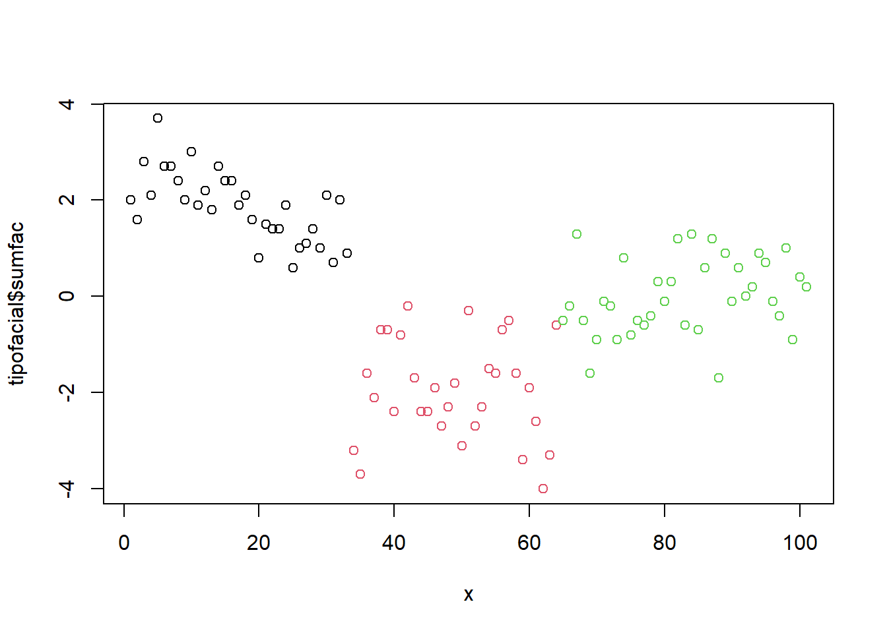
3.4.3 Separando o conjunto de dados para treinamento
Separando os dados de treinamento e testes utilizando kfold:
folds = 5
cv <- crossv_kfold(tipofacial, k = folds)
cv## # A tibble: 5 × 3
## train test .id
## <named list> <named list> <chr>
## 1 <resample [80 x 14]> <resample [21 x 14]> 1
## 2 <resample [81 x 14]> <resample [20 x 14]> 2
## 3 <resample [81 x 14]> <resample [20 x 14]> 3
## 4 <resample [81 x 14]> <resample [20 x 14]> 4
## 5 <resample [81 x 14]> <resample [20 x 14]> 5Separando dados de treinamento (70%) e testes (30%).
alpha=0.7
d = sort(sample(nrow(tipofacial), nrow(tipofacial)*alpha))
train = tipofacial[d,]
test = tipofacial[-d,]3.4.4 Generalized Linear Models
Treinando os modelos:
glm.fit = map(cv$train, ~multinom(grupo ~ sumfac, data= .))## # weights: 9 (4 variable)
## initial value 87.888983
## iter 10 value 28.997786
## final value 28.982608
## converged
## # weights: 9 (4 variable)
## initial value 88.987595
## iter 10 value 30.767060
## final value 30.644565
## converged
## # weights: 9 (4 variable)
## initial value 88.987595
## iter 10 value 28.608975
## final value 28.590407
## converged
## # weights: 9 (4 variable)
## initial value 88.987595
## iter 10 value 30.946120
## final value 30.473343
## converged
## # weights: 9 (4 variable)
## initial value 88.987595
## iter 10 value 32.122918
## final value 32.013001
## convergedPredição com os modelos:
preditos <- map2_df(glm.fit, cv$test, get_pred, .id = "Run")
for (run in 1:folds) {
pred <- preditos %>% filter(Run == run)
cm = confusionMatrix(pred$pred, pred$grupo)
cat("\n", "--- Run ", run, "---", "\n")
print(cm)
# Adiciona as métricas no df
model_eval[nrow(model_eval) + 1,] <- c(paste("glm.fit", run, sep="-"), "glm", cm$overall['Accuracy'], cm$byClass[,1], cm$byClass[,2])
run <- run + 1
}##
## --- Run 1 ---
## Confusion Matrix and Statistics
##
## Reference
## Prediction braq dolico meso
## braq 7 0 0
## dolico 0 3 0
## meso 1 3 7
##
## Overall Statistics
##
## Accuracy : 0.8095
## 95% CI : (0.5809, 0.9455)
## No Information Rate : 0.381
## P-Value [Acc > NIR] : 7.582e-05
##
## Kappa : 0.7103
##
## Mcnemar's Test P-Value : NA
##
## Statistics by Class:
##
## Class: braq Class: dolico Class: meso
## Sensitivity 0.8750 0.5000 1.0000
## Specificity 1.0000 1.0000 0.7143
## Pos Pred Value 1.0000 1.0000 0.6364
## Neg Pred Value 0.9286 0.8333 1.0000
## Prevalence 0.3810 0.2857 0.3333
## Detection Rate 0.3333 0.1429 0.3333
## Detection Prevalence 0.3333 0.1429 0.5238
## Balanced Accuracy 0.9375 0.7500 0.8571
##
## --- Run 2 ---
## Confusion Matrix and Statistics
##
## Reference
## Prediction braq dolico meso
## braq 5 0 4
## dolico 0 4 1
## meso 0 0 6
##
## Overall Statistics
##
## Accuracy : 0.75
## 95% CI : (0.509, 0.9134)
## No Information Rate : 0.55
## P-Value [Acc > NIR] : 0.05533
##
## Kappa : 0.6283
##
## Mcnemar's Test P-Value : NA
##
## Statistics by Class:
##
## Class: braq Class: dolico Class: meso
## Sensitivity 1.0000 1.0000 0.5455
## Specificity 0.7333 0.9375 1.0000
## Pos Pred Value 0.5556 0.8000 1.0000
## Neg Pred Value 1.0000 1.0000 0.6429
## Prevalence 0.2500 0.2000 0.5500
## Detection Rate 0.2500 0.2000 0.3000
## Detection Prevalence 0.4500 0.2500 0.3000
## Balanced Accuracy 0.8667 0.9688 0.7727
##
## --- Run 3 ---
## Confusion Matrix and Statistics
##
## Reference
## Prediction braq dolico meso
## braq 6 0 0
## dolico 0 3 2
## meso 1 3 5
##
## Overall Statistics
##
## Accuracy : 0.7
## 95% CI : (0.4572, 0.8811)
## No Information Rate : 0.35
## P-Value [Acc > NIR] : 0.001521
##
## Kappa : 0.5472
##
## Mcnemar's Test P-Value : NA
##
## Statistics by Class:
##
## Class: braq Class: dolico Class: meso
## Sensitivity 0.8571 0.5000 0.7143
## Specificity 1.0000 0.8571 0.6923
## Pos Pred Value 1.0000 0.6000 0.5556
## Neg Pred Value 0.9286 0.8000 0.8182
## Prevalence 0.3500 0.3000 0.3500
## Detection Rate 0.3000 0.1500 0.2500
## Detection Prevalence 0.3000 0.2500 0.4500
## Balanced Accuracy 0.9286 0.6786 0.7033
##
## --- Run 4 ---
## Confusion Matrix and Statistics
##
## Reference
## Prediction braq dolico meso
## braq 3 0 2
## dolico 0 8 0
## meso 0 2 5
##
## Overall Statistics
##
## Accuracy : 0.8
## 95% CI : (0.5634, 0.9427)
## No Information Rate : 0.5
## P-Value [Acc > NIR] : 0.005909
##
## Kappa : 0.6875
##
## Mcnemar's Test P-Value : NA
##
## Statistics by Class:
##
## Class: braq Class: dolico Class: meso
## Sensitivity 1.0000 0.8000 0.7143
## Specificity 0.8824 1.0000 0.8462
## Pos Pred Value 0.6000 1.0000 0.7143
## Neg Pred Value 1.0000 0.8333 0.8462
## Prevalence 0.1500 0.5000 0.3500
## Detection Rate 0.1500 0.4000 0.2500
## Detection Prevalence 0.2500 0.4000 0.3500
## Balanced Accuracy 0.9412 0.9000 0.7802
##
## --- Run 5 ---
## Confusion Matrix and Statistics
##
## Reference
## Prediction braq dolico meso
## braq 7 0 0
## dolico 0 5 1
## meso 3 0 4
##
## Overall Statistics
##
## Accuracy : 0.8
## 95% CI : (0.5634, 0.9427)
## No Information Rate : 0.5
## P-Value [Acc > NIR] : 0.005909
##
## Kappa : 0.6981
##
## Mcnemar's Test P-Value : NA
##
## Statistics by Class:
##
## Class: braq Class: dolico Class: meso
## Sensitivity 0.7000 1.0000 0.8000
## Specificity 1.0000 0.9333 0.8000
## Pos Pred Value 1.0000 0.8333 0.5714
## Neg Pred Value 0.7692 1.0000 0.9231
## Prevalence 0.5000 0.2500 0.2500
## Detection Rate 0.3500 0.2500 0.2000
## Detection Prevalence 0.3500 0.3000 0.3500
## Balanced Accuracy 0.8500 0.9667 0.8000Treinando o modelo:
glm.fit = multinom(grupo ~ sumfac, data=train)## # weights: 9 (4 variable)
## initial value 76.902860
## iter 10 value 25.113276
## final value 24.783162
## convergedsummary(glm.fit)## Call:
## multinom(formula = grupo ~ sumfac, data = train)
##
## Coefficients:
## (Intercept) sumfac
## dolico 1.116711 -6.284307
## meso 3.500467 -4.001364
##
## Std. Errors:
## (Intercept) sumfac
## dolico 1.471414 1.527252
## meso 1.300203 1.338159
##
## Residual Deviance: 49.56632
## AIC: 57.56632predito = predict(glm.fit, newdata=test)
cm = confusionMatrix(predito, test$grupo)
cm## Confusion Matrix and Statistics
##
## Reference
## Prediction braq dolico meso
## braq 6 0 4
## dolico 0 9 1
## meso 1 3 7
##
## Overall Statistics
##
## Accuracy : 0.7097
## 95% CI : (0.5196, 0.8578)
## No Information Rate : 0.3871
## P-Value [Acc > NIR] : 0.0002756
##
## Kappa : 0.5634
##
## Mcnemar's Test P-Value : NA
##
## Statistics by Class:
##
## Class: braq Class: dolico Class: meso
## Sensitivity 0.8571 0.7500 0.5833
## Specificity 0.8333 0.9474 0.7895
## Pos Pred Value 0.6000 0.9000 0.6364
## Neg Pred Value 0.9524 0.8571 0.7500
## Prevalence 0.2258 0.3871 0.3871
## Detection Rate 0.1935 0.2903 0.2258
## Detection Prevalence 0.3226 0.3226 0.3548
## Balanced Accuracy 0.8452 0.8487 0.6864# Adiciona as métricas no df
model_eval[nrow(model_eval) + 1,] <- c("glm.fit-split", "glm", cm$overall['Accuracy'], cm$byClass[,1], cm$byClass[,2])kable(model_eval) %>%
kable_styling(latex_options = "striped")| Model | Algorithm | Accuracy | Sensitivity_C1 | Sensitivity_C2 | Sensitivity_C3 | Specificity_C1 | Specificity_C2 | Specificity_C3 |
|---|---|---|---|---|---|---|---|---|
| glm.fit-1 | glm | 0.80952380952381 | 0.875 | 0.5 | 1 | 1 | 1 | 0.714285714285714 |
| glm.fit-2 | glm | 0.75 | 1 | 1 | 0.545454545454545 | 0.733333333333333 | 0.9375 | 1 |
| glm.fit-3 | glm | 0.7 | 0.857142857142857 | 0.5 | 0.714285714285714 | 1 | 0.857142857142857 | 0.692307692307692 |
| glm.fit-4 | glm | 0.8 | 1 | 0.8 | 0.714285714285714 | 0.882352941176471 | 1 | 0.846153846153846 |
| glm.fit-5 | glm | 0.8 | 0.7 | 1 | 0.8 | 1 | 0.933333333333333 | 0.8 |
| glm.fit-split | glm | 0.709677419354839 | 0.857142857142857 | 0.75 | 0.583333333333333 | 0.833333333333333 | 0.947368421052632 | 0.789473684210526 |
Treinar o modelo com um conjunto de dados diferente do de teste mostrou que o modelo tem uma capacidade razoável de generalização.
3.4.5 Linear Discriminant Analysis - Fisher
Treinando o modelo:
modFisher01 = lda(grupo ~ sumfac, data = tipofacial)
predito = predict(modFisher01)
classPred = predito$class
cm = confusionMatrix(classPred, tipofacial$grupo)
cm## Confusion Matrix and Statistics
##
## Reference
## Prediction braq dolico meso
## braq 29 0 5
## dolico 0 23 2
## meso 4 8 30
##
## Overall Statistics
##
## Accuracy : 0.8119
## 95% CI : (0.7219, 0.8828)
## No Information Rate : 0.3663
## P-Value [Acc > NIR] : < 2.2e-16
##
## Kappa : 0.7157
##
## Mcnemar's Test P-Value : NA
##
## Statistics by Class:
##
## Class: braq Class: dolico Class: meso
## Sensitivity 0.8788 0.7419 0.8108
## Specificity 0.9265 0.9714 0.8125
## Pos Pred Value 0.8529 0.9200 0.7143
## Neg Pred Value 0.9403 0.8947 0.8814
## Prevalence 0.3267 0.3069 0.3663
## Detection Rate 0.2871 0.2277 0.2970
## Detection Prevalence 0.3366 0.2475 0.4158
## Balanced Accuracy 0.9026 0.8567 0.8117# Adiciona as métricas no df
model_eval[nrow(model_eval) + 1,] <- c("modFisher01", "lda", cm$overall['Accuracy'], cm$byClass[,1], cm$byClass[,2])Treinando com conjunto de dados de treinamento e testes:
modFisher01 = lda(grupo ~ sumfac, data=train)
predito_test = as.data.frame(predict(modFisher01, test))
predito_test = predito_test[c(5, 1)]
cm = confusionMatrix(predito_test$class, test$grupo)
cm## Confusion Matrix and Statistics
##
## Reference
## Prediction braq dolico meso
## braq 6 0 4
## dolico 0 9 1
## meso 1 3 7
##
## Overall Statistics
##
## Accuracy : 0.7097
## 95% CI : (0.5196, 0.8578)
## No Information Rate : 0.3871
## P-Value [Acc > NIR] : 0.0002756
##
## Kappa : 0.5634
##
## Mcnemar's Test P-Value : NA
##
## Statistics by Class:
##
## Class: braq Class: dolico Class: meso
## Sensitivity 0.8571 0.7500 0.5833
## Specificity 0.8333 0.9474 0.7895
## Pos Pred Value 0.6000 0.9000 0.6364
## Neg Pred Value 0.9524 0.8571 0.7500
## Prevalence 0.2258 0.3871 0.3871
## Detection Rate 0.1935 0.2903 0.2258
## Detection Prevalence 0.3226 0.3226 0.3548
## Balanced Accuracy 0.8452 0.8487 0.6864# Adiciona as métricas no df
model_eval[nrow(model_eval) + 1,] <- c("modFisher01-split", "lda", cm$overall['Accuracy'], cm$byClass[,1], cm$byClass[,2])3.4.6 Bayes
Treinando o modelo:
modBayes01 = lda(grupo ~ sumfac, data=tipofacial, prior=c(0.25, 0.50, 0.25))
predito = predict(modBayes01)
classPred = predito$class
cm = confusionMatrix(classPred, tipofacial$grupo)
cm## Confusion Matrix and Statistics
##
## Reference
## Prediction braq dolico meso
## braq 29 0 5
## dolico 0 24 6
## meso 4 7 26
##
## Overall Statistics
##
## Accuracy : 0.7822
## 95% CI : (0.689, 0.8582)
## No Information Rate : 0.3663
## P-Value [Acc > NIR] : < 2.2e-16
##
## Kappa : 0.6723
##
## Mcnemar's Test P-Value : NA
##
## Statistics by Class:
##
## Class: braq Class: dolico Class: meso
## Sensitivity 0.8788 0.7742 0.7027
## Specificity 0.9265 0.9143 0.8281
## Pos Pred Value 0.8529 0.8000 0.7027
## Neg Pred Value 0.9403 0.9014 0.8281
## Prevalence 0.3267 0.3069 0.3663
## Detection Rate 0.2871 0.2376 0.2574
## Detection Prevalence 0.3366 0.2970 0.3663
## Balanced Accuracy 0.9026 0.8442 0.7654# Adiciona as métricas no df
model_eval[nrow(model_eval) + 1,] <- c("modBayes01-prior 0.25 / 0.50 / 0.25", "lda", cm$overall['Accuracy'], cm$byClass[,1], cm$byClass[,2])Treinando com conjunto de dados de treinamento e testes:
modBayes01 = lda(grupo ~ sumfac, data=train, prior=c(0.25, 0.50, 0.25))
predito_test = as.data.frame(predict(modBayes01, test))
predito_test = predito_test[c(5, 1)]
cm = confusionMatrix(predito_test$class, test$grupo)
cm## Confusion Matrix and Statistics
##
## Reference
## Prediction braq dolico meso
## braq 6 0 3
## dolico 0 9 1
## meso 1 3 8
##
## Overall Statistics
##
## Accuracy : 0.7419
## 95% CI : (0.5539, 0.8814)
## No Information Rate : 0.3871
## P-Value [Acc > NIR] : 6.52e-05
##
## Kappa : 0.6088
##
## Mcnemar's Test P-Value : NA
##
## Statistics by Class:
##
## Class: braq Class: dolico Class: meso
## Sensitivity 0.8571 0.7500 0.6667
## Specificity 0.8750 0.9474 0.7895
## Pos Pred Value 0.6667 0.9000 0.6667
## Neg Pred Value 0.9545 0.8571 0.7895
## Prevalence 0.2258 0.3871 0.3871
## Detection Rate 0.1935 0.2903 0.2581
## Detection Prevalence 0.2903 0.3226 0.3871
## Balanced Accuracy 0.8661 0.8487 0.7281# Adiciona as métricas no df
model_eval[nrow(model_eval) + 1,] <- c("modBayes01-prior-0.25/0.50/0.25-split", "lda", cm$overall['Accuracy'], cm$byClass[,1], cm$byClass[,2])3.4.7 Naive Bayes
Treinando o modelo:
modNaiveBayes01 = naiveBayes(grupo ~ sumfac, data=tipofacial)
predito = predict(modNaiveBayes01, tipofacial)
cm = confusionMatrix(predito, tipofacial$grupo)
cm## Confusion Matrix and Statistics
##
## Reference
## Prediction braq dolico meso
## braq 29 0 5
## dolico 0 23 2
## meso 4 8 30
##
## Overall Statistics
##
## Accuracy : 0.8119
## 95% CI : (0.7219, 0.8828)
## No Information Rate : 0.3663
## P-Value [Acc > NIR] : < 2.2e-16
##
## Kappa : 0.7157
##
## Mcnemar's Test P-Value : NA
##
## Statistics by Class:
##
## Class: braq Class: dolico Class: meso
## Sensitivity 0.8788 0.7419 0.8108
## Specificity 0.9265 0.9714 0.8125
## Pos Pred Value 0.8529 0.9200 0.7143
## Neg Pred Value 0.9403 0.8947 0.8814
## Prevalence 0.3267 0.3069 0.3663
## Detection Rate 0.2871 0.2277 0.2970
## Detection Prevalence 0.3366 0.2475 0.4158
## Balanced Accuracy 0.9026 0.8567 0.8117# Adiciona as métricas no df
model_eval[nrow(model_eval) + 1,] <- c("modNaiveBayes01", "naiveBayes", cm$overall['Accuracy'], cm$byClass[,1], cm$byClass[,2])Treinando com conjunto de dados de treinamento e testes:
modNaiveBayes01 = naiveBayes(grupo ~ sumfac, data=train)
predito_test = predict(modNaiveBayes01, test)
cm = confusionMatrix(predito_test, test$grupo)
cm## Confusion Matrix and Statistics
##
## Reference
## Prediction braq dolico meso
## braq 6 0 4
## dolico 0 9 1
## meso 1 3 7
##
## Overall Statistics
##
## Accuracy : 0.7097
## 95% CI : (0.5196, 0.8578)
## No Information Rate : 0.3871
## P-Value [Acc > NIR] : 0.0002756
##
## Kappa : 0.5634
##
## Mcnemar's Test P-Value : NA
##
## Statistics by Class:
##
## Class: braq Class: dolico Class: meso
## Sensitivity 0.8571 0.7500 0.5833
## Specificity 0.8333 0.9474 0.7895
## Pos Pred Value 0.6000 0.9000 0.6364
## Neg Pred Value 0.9524 0.8571 0.7500
## Prevalence 0.2258 0.3871 0.3871
## Detection Rate 0.1935 0.2903 0.2258
## Detection Prevalence 0.3226 0.3226 0.3548
## Balanced Accuracy 0.8452 0.8487 0.6864# Adiciona as métricas no df
model_eval[nrow(model_eval) + 1,] <- c("modNaiveBayes01-split", "naiveBayes", cm$overall['Accuracy'], cm$byClass[,1], cm$byClass[,2])3.4.8 Decison tree
Treinando o modelo:
modArvDec01 = rpart(grupo ~ sumfac, data = tipofacial)
prp(modArvDec01, faclen=0, #use full names for factor labels
extra=1, #display number of observations for each terminal node
roundint=F, #don't round to integers in output
digits=5)predito = predict(modArvDec01, type = "class")
cm = confusionMatrix(predito, tipofacial$grupo)
cm## Confusion Matrix and Statistics
##
## Reference
## Prediction braq dolico meso
## braq 26 0 0
## dolico 0 23 2
## meso 7 8 35
##
## Overall Statistics
##
## Accuracy : 0.8317
## 95% CI : (0.7442, 0.8988)
## No Information Rate : 0.3663
## P-Value [Acc > NIR] : < 2.2e-16
##
## Kappa : 0.7444
##
## Mcnemar's Test P-Value : NA
##
## Statistics by Class:
##
## Class: braq Class: dolico Class: meso
## Sensitivity 0.7879 0.7419 0.9459
## Specificity 1.0000 0.9714 0.7656
## Pos Pred Value 1.0000 0.9200 0.7000
## Neg Pred Value 0.9067 0.8947 0.9608
## Prevalence 0.3267 0.3069 0.3663
## Detection Rate 0.2574 0.2277 0.3465
## Detection Prevalence 0.2574 0.2475 0.4950
## Balanced Accuracy 0.8939 0.8567 0.8558# Adiciona as métricas no df
model_eval[nrow(model_eval) + 1,] <- c("modArvDec01", "rpart", cm$overall['Accuracy'], cm$byClass[,1], cm$byClass[,2])Treinando com conjunto de dados de treinamento e testes:
modArvDec01 = rpart(grupo ~ sumfac, data=train)
prp(modArvDec01, faclen=0, #use full names for factor labels
extra=1, #display number of observations for each terminal node
roundint=F, #don't round to integers in output
digits=5)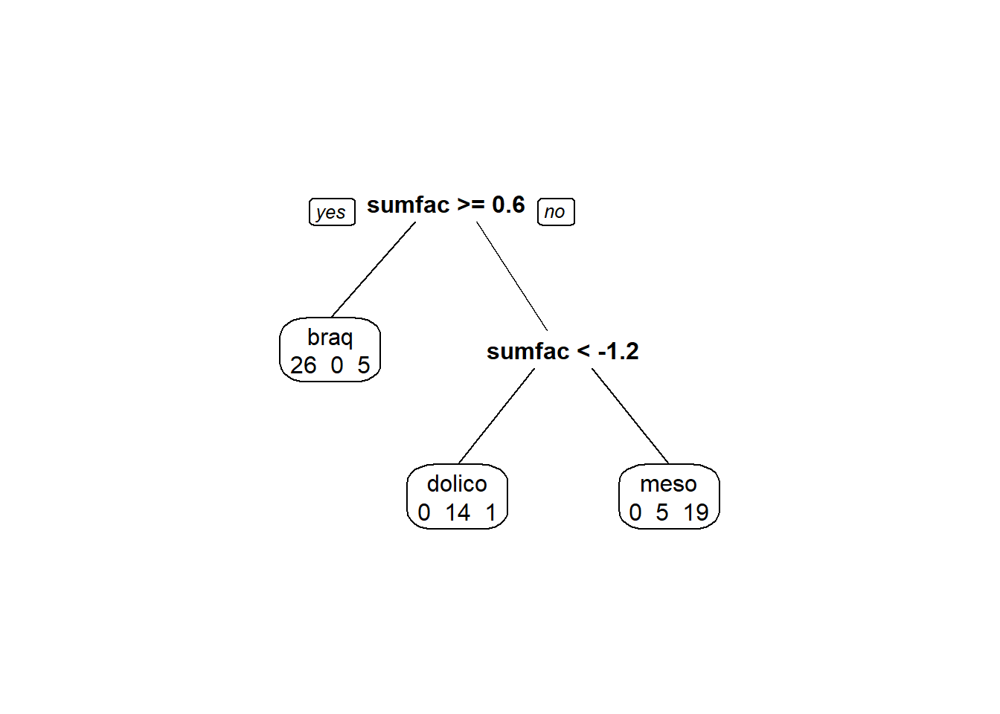
predito_test = predict(modArvDec01, test, type = "class")
cm = confusionMatrix(predito_test, test$grupo)
cm## Confusion Matrix and Statistics
##
## Reference
## Prediction braq dolico meso
## braq 7 0 6
## dolico 0 9 1
## meso 0 3 5
##
## Overall Statistics
##
## Accuracy : 0.6774
## 95% CI : (0.4863, 0.8332)
## No Information Rate : 0.3871
## P-Value [Acc > NIR] : 0.001009
##
## Kappa : 0.526
##
## Mcnemar's Test P-Value : NA
##
## Statistics by Class:
##
## Class: braq Class: dolico Class: meso
## Sensitivity 1.0000 0.7500 0.4167
## Specificity 0.7500 0.9474 0.8421
## Pos Pred Value 0.5385 0.9000 0.6250
## Neg Pred Value 1.0000 0.8571 0.6957
## Prevalence 0.2258 0.3871 0.3871
## Detection Rate 0.2258 0.2903 0.1613
## Detection Prevalence 0.4194 0.3226 0.2581
## Balanced Accuracy 0.8750 0.8487 0.6294# Adiciona as métricas no df
model_eval[nrow(model_eval) + 1,] <- c("modArvDec01-split", "rpart", cm$overall['Accuracy'], cm$byClass[,1], cm$byClass[,2])3.4.9 SVM
Treinando o modelo:
modSVM01 = svm(grupo ~ sumfac, data=tipofacial, kernel = "linear")
predito = predict(modSVM01, type = "class")
cm = confusionMatrix(predito, tipofacial$grupo)
# Adiciona as métricas no df
model_eval[nrow(model_eval) + 1,] <- c("modSVM01", "svm", cm$overall['Accuracy'], cm$byClass[,1], cm$byClass[,2])Treinando com conjunto de dados de treinamento e testes:
modSVM01 = svm(grupo ~ sumfac, data=train, kernel = "linear")
predito_test = predict(modSVM01, test, type = "class")
cm = confusionMatrix(predito_test, test$grupo)
cm## Confusion Matrix and Statistics
##
## Reference
## Prediction braq dolico meso
## braq 6 0 4
## dolico 0 9 1
## meso 1 3 7
##
## Overall Statistics
##
## Accuracy : 0.7097
## 95% CI : (0.5196, 0.8578)
## No Information Rate : 0.3871
## P-Value [Acc > NIR] : 0.0002756
##
## Kappa : 0.5634
##
## Mcnemar's Test P-Value : NA
##
## Statistics by Class:
##
## Class: braq Class: dolico Class: meso
## Sensitivity 0.8571 0.7500 0.5833
## Specificity 0.8333 0.9474 0.7895
## Pos Pred Value 0.6000 0.9000 0.6364
## Neg Pred Value 0.9524 0.8571 0.7500
## Prevalence 0.2258 0.3871 0.3871
## Detection Rate 0.1935 0.2903 0.2258
## Detection Prevalence 0.3226 0.3226 0.3548
## Balanced Accuracy 0.8452 0.8487 0.6864# Adiciona as métricas no df
model_eval[nrow(model_eval) + 1,] <- c("modSVM01-split", "svm", cm$overall['Accuracy'], cm$byClass[,1], cm$byClass[,2])3.4.10 Neural networks
Treinando o modelo:
modRedNeural01 = neuralnet(grupo ~ sumfac, data = tipofacial, hidden = c(2,4,3))
plot(modRedNeural01)
ypred = neuralnet::compute(modRedNeural01, tipofacial)
yhat = ypred$net.result
yhat = round(yhat)
yhat=data.frame("yhat"= dplyr::case_when(yhat[ ,1:1]==1 ~ "braq",
yhat[ ,2:2]==1 ~ "dolico",
TRUE ~ "meso"))
cm = confusionMatrix(as.factor(yhat$yhat), tipofacial$grupo)
cm## Confusion Matrix and Statistics
##
## Reference
## Prediction braq dolico meso
## braq 29 0 5
## dolico 0 23 2
## meso 4 8 30
##
## Overall Statistics
##
## Accuracy : 0.8119
## 95% CI : (0.7219, 0.8828)
## No Information Rate : 0.3663
## P-Value [Acc > NIR] : < 2.2e-16
##
## Kappa : 0.7157
##
## Mcnemar's Test P-Value : NA
##
## Statistics by Class:
##
## Class: braq Class: dolico Class: meso
## Sensitivity 0.8788 0.7419 0.8108
## Specificity 0.9265 0.9714 0.8125
## Pos Pred Value 0.8529 0.9200 0.7143
## Neg Pred Value 0.9403 0.8947 0.8814
## Prevalence 0.3267 0.3069 0.3663
## Detection Rate 0.2871 0.2277 0.2970
## Detection Prevalence 0.3366 0.2475 0.4158
## Balanced Accuracy 0.9026 0.8567 0.8117# Adiciona as métricas no df
model_eval[nrow(model_eval) + 1,] <- c("modRedNeural01", "neuralnet", cm$overall['Accuracy'], cm$byClass[,1], cm$byClass[,2])Treinando com conjunto de dados de treinamento e testes:
modRedNeural01 = neuralnet(grupo ~ sumfac, data=train, hidden = c(2,4,3))
ypred = neuralnet::compute(modRedNeural01, test)
yhat = ypred$net.result
yhat = round(yhat)
yhat=data.frame("yhat"= dplyr::case_when(yhat[ ,1:1]==1 ~ "braq",
yhat[ ,2:2]==1 ~ "dolico",
TRUE ~ "meso"))
cm = confusionMatrix(as.factor(yhat$yhat), test$grupo)
cm## Confusion Matrix and Statistics
##
## Reference
## Prediction braq dolico meso
## braq 7 0 4
## dolico 0 9 1
## meso 0 3 7
##
## Overall Statistics
##
## Accuracy : 0.7419
## 95% CI : (0.5539, 0.8814)
## No Information Rate : 0.3871
## P-Value [Acc > NIR] : 6.52e-05
##
## Kappa : 0.6149
##
## Mcnemar's Test P-Value : NA
##
## Statistics by Class:
##
## Class: braq Class: dolico Class: meso
## Sensitivity 1.0000 0.7500 0.5833
## Specificity 0.8333 0.9474 0.8421
## Pos Pred Value 0.6364 0.9000 0.7000
## Neg Pred Value 1.0000 0.8571 0.7619
## Prevalence 0.2258 0.3871 0.3871
## Detection Rate 0.2258 0.2903 0.2258
## Detection Prevalence 0.3548 0.3226 0.3226
## Balanced Accuracy 0.9167 0.8487 0.7127# Adiciona as métricas no df
model_eval[nrow(model_eval) + 1,] <- c("modRedNeural01-split", "neuralnet", cm$overall['Accuracy'], cm$byClass[,1], cm$byClass[,2])3.4.11 KNN
Treinando o modelo com \(k = 3\):
modKnn3_01 = knn3(grupo ~ sumfac, data=tipofacial, k=3)
predito = predict(modKnn3_01, tipofacial, type = "class")
cm = confusionMatrix(predito, tipofacial$grupo, positive="0")
# Adiciona as métricas no df
model_eval[nrow(model_eval) + 1,] <- c("modKnn3_01-k=3", "knn3", cm$overall['Accuracy'], cm$byClass[,1], cm$byClass[,2])Treinando com conjunto de dados de treinamento e testes:
modKnn3_01 = knn3(grupo ~ sumfac, data=train, k=3)
predito_test = predict(modKnn3_01, test, type = "class")
cm = confusionMatrix(predito_test, test$grupo, positive="0")
cm## Confusion Matrix and Statistics
##
## Reference
## Prediction braq dolico meso
## braq 6 0 4
## dolico 0 9 1
## meso 1 3 7
##
## Overall Statistics
##
## Accuracy : 0.7097
## 95% CI : (0.5196, 0.8578)
## No Information Rate : 0.3871
## P-Value [Acc > NIR] : 0.0002756
##
## Kappa : 0.5634
##
## Mcnemar's Test P-Value : NA
##
## Statistics by Class:
##
## Class: braq Class: dolico Class: meso
## Sensitivity 0.8571 0.7500 0.5833
## Specificity 0.8333 0.9474 0.7895
## Pos Pred Value 0.6000 0.9000 0.6364
## Neg Pred Value 0.9524 0.8571 0.7500
## Prevalence 0.2258 0.3871 0.3871
## Detection Rate 0.1935 0.2903 0.2258
## Detection Prevalence 0.3226 0.3226 0.3548
## Balanced Accuracy 0.8452 0.8487 0.6864# Adiciona as métricas no df
model_eval[nrow(model_eval) + 1,] <- c("modKnn3_01-k=3-split", "knn3", cm$overall['Accuracy'], cm$byClass[,1], cm$byClass[,2])Treinando o modelo com \(k = 5\):
modKnn5_01 = knn3(grupo ~ sumfac, data=tipofacial, k=5)
predito = predict(modKnn5_01, tipofacial, type="class")
cm = confusionMatrix(predito, tipofacial$grupo, positive="0")
cm## Confusion Matrix and Statistics
##
## Reference
## Prediction braq dolico meso
## braq 30 0 2
## dolico 0 27 4
## meso 3 4 31
##
## Overall Statistics
##
## Accuracy : 0.8713
## 95% CI : (0.79, 0.9296)
## No Information Rate : 0.3663
## P-Value [Acc > NIR] : < 2.2e-16
##
## Kappa : 0.8063
##
## Mcnemar's Test P-Value : NA
##
## Statistics by Class:
##
## Class: braq Class: dolico Class: meso
## Sensitivity 0.9091 0.8710 0.8378
## Specificity 0.9706 0.9429 0.8906
## Pos Pred Value 0.9375 0.8710 0.8158
## Neg Pred Value 0.9565 0.9429 0.9048
## Prevalence 0.3267 0.3069 0.3663
## Detection Rate 0.2970 0.2673 0.3069
## Detection Prevalence 0.3168 0.3069 0.3762
## Balanced Accuracy 0.9398 0.9069 0.8642# Adiciona as métricas no df
model_eval[nrow(model_eval) + 1,] <- c("modKnn3_01-k=5", "knn3", cm$overall['Accuracy'], cm$byClass[,1], cm$byClass[,2])Treinando com conjunto de dados de treinamento e testes:
modKnn5_01 = knn3(grupo ~ sumfac, data=train, k=5)
predito_test = predict(modKnn5_01, test, type = "class")
cm = confusionMatrix(predito_test, test$grupo, positive="0")
cm## Confusion Matrix and Statistics
##
## Reference
## Prediction braq dolico meso
## braq 7 0 5
## dolico 0 9 1
## meso 0 3 6
##
## Overall Statistics
##
## Accuracy : 0.7097
## 95% CI : (0.5196, 0.8578)
## No Information Rate : 0.3871
## P-Value [Acc > NIR] : 0.0002756
##
## Kappa : 0.5701
##
## Mcnemar's Test P-Value : NA
##
## Statistics by Class:
##
## Class: braq Class: dolico Class: meso
## Sensitivity 1.0000 0.7500 0.5000
## Specificity 0.7917 0.9474 0.8421
## Pos Pred Value 0.5833 0.9000 0.6667
## Neg Pred Value 1.0000 0.8571 0.7273
## Prevalence 0.2258 0.3871 0.3871
## Detection Rate 0.2258 0.2903 0.1935
## Detection Prevalence 0.3871 0.3226 0.2903
## Balanced Accuracy 0.8958 0.8487 0.6711# Adiciona as métricas no df
model_eval[nrow(model_eval) + 1,] <- c("modKnn5_01-k=5-split", "knn3", cm$overall['Accuracy'], cm$byClass[,1], cm$byClass[,2])3.4.12 Comparando os modelos
| Model | Algorithm | Accuracy | Sensitivity_C1 | Sensitivity_C2 | Sensitivity_C3 | Specificity_C1 | Specificity_C2 | Specificity_C3 |
|---|---|---|---|---|---|---|---|---|
| glm.fit-1 | glm | 0.80952380952381 | 0.875 | 0.5 | 1 | 1 | 1 | 0.714285714285714 |
| glm.fit-2 | glm | 0.75 | 1 | 1 | 0.545454545454545 | 0.733333333333333 | 0.9375 | 1 |
| glm.fit-3 | glm | 0.7 | 0.857142857142857 | 0.5 | 0.714285714285714 | 1 | 0.857142857142857 | 0.692307692307692 |
| glm.fit-4 | glm | 0.8 | 1 | 0.8 | 0.714285714285714 | 0.882352941176471 | 1 | 0.846153846153846 |
| glm.fit-5 | glm | 0.8 | 0.7 | 1 | 0.8 | 1 | 0.933333333333333 | 0.8 |
| glm.fit-split | glm | 0.709677419354839 | 0.857142857142857 | 0.75 | 0.583333333333333 | 0.833333333333333 | 0.947368421052632 | 0.789473684210526 |
| modFisher01 | lda | 0.811881188118812 | 0.878787878787879 | 0.741935483870968 | 0.810810810810811 | 0.926470588235294 | 0.971428571428571 | 0.8125 |
| modFisher01-split | lda | 0.709677419354839 | 0.857142857142857 | 0.75 | 0.583333333333333 | 0.833333333333333 | 0.947368421052632 | 0.789473684210526 |
| modBayes01-prior 0.25 / 0.50 / 0.25 | lda | 0.782178217821782 | 0.878787878787879 | 0.774193548387097 | 0.702702702702703 | 0.926470588235294 | 0.914285714285714 | 0.828125 |
| modBayes01-prior-0.25/0.50/0.25-split | lda | 0.741935483870968 | 0.857142857142857 | 0.75 | 0.666666666666667 | 0.875 | 0.947368421052632 | 0.789473684210526 |
| modNaiveBayes01 | naiveBayes | 0.811881188118812 | 0.878787878787879 | 0.741935483870968 | 0.810810810810811 | 0.926470588235294 | 0.971428571428571 | 0.8125 |
| modNaiveBayes01-split | naiveBayes | 0.709677419354839 | 0.857142857142857 | 0.75 | 0.583333333333333 | 0.833333333333333 | 0.947368421052632 | 0.789473684210526 |
| modArvDec01 | rpart | 0.831683168316832 | 0.787878787878788 | 0.741935483870968 | 0.945945945945946 | 1 | 0.971428571428571 | 0.765625 |
| modArvDec01-split | rpart | 0.67741935483871 | 1 | 0.75 | 0.416666666666667 | 0.75 | 0.947368421052632 | 0.842105263157895 |
| modSVM01 | svm | 0.801980198019802 | 0.818181818181818 | 0.741935483870968 | 0.837837837837838 | 0.941176470588235 | 0.971428571428571 | 0.78125 |
| modSVM01-split | svm | 0.709677419354839 | 0.857142857142857 | 0.75 | 0.583333333333333 | 0.833333333333333 | 0.947368421052632 | 0.789473684210526 |
| modRedNeural01 | neuralnet | 0.811881188118812 | 0.878787878787879 | 0.741935483870968 | 0.810810810810811 | 0.926470588235294 | 0.971428571428571 | 0.8125 |
| modRedNeural01-split | neuralnet | 0.741935483870968 | 1 | 0.75 | 0.583333333333333 | 0.833333333333333 | 0.947368421052632 | 0.842105263157895 |
| modKnn3_01-k=3 | knn3 | 0.861386138613861 | 0.909090909090909 | 0.838709677419355 | 0.837837837837838 | 0.955882352941177 | 0.957142857142857 | 0.875 |
| modKnn3_01-k=3-split | knn3 | 0.709677419354839 | 0.857142857142857 | 0.75 | 0.583333333333333 | 0.833333333333333 | 0.947368421052632 | 0.789473684210526 |
| modKnn3_01-k=5 | knn3 | 0.871287128712871 | 0.909090909090909 | 0.870967741935484 | 0.837837837837838 | 0.970588235294118 | 0.942857142857143 | 0.890625 |
| modKnn5_01-k=5-split | knn3 | 0.709677419354839 | 1 | 0.75 | 0.5 | 0.791666666666667 | 0.947368421052632 | 0.842105263157895 |
A estratégia de treinamento para o modelo glm foi aplicar dois métodos de treinamento: kfold e dividir o conjunto de dados em 70% para treinamento e 30% para testes. O método de kfold (execução 4 - glm.fit-4) obteve o melhor resultado, superior a simples divisão dos dados (split).
Para os demais modelos o treinamento foi com toda a base e com a divisão 70/30 (split). Em geral, quando os dados foram divididos, os modelos obtiveram um resultado pior, o que sugere que a estratégia em diversificar os dados para treinamento ajuda os modelos a generalizar melhor.
3.4.13 Agrupamento
tipofacialS = subset(tipofacial, select=c("sexo", "idade", "altfac", "proffac"))
dummy <- dummyVars(" ~ .", data=tipofacialS)
newdata <- data.frame(predict(dummy, newdata = tipofacialS))
d <- dist(newdata, method = "maximum")
grup = hclust(d, method = "ward.D")
groups <- cutree(grup, k=3)
plot(grup, cex = 0.6)
rect.hclust(grup , k = 3, border = 2:6)
abline(h = 3, col = 'red')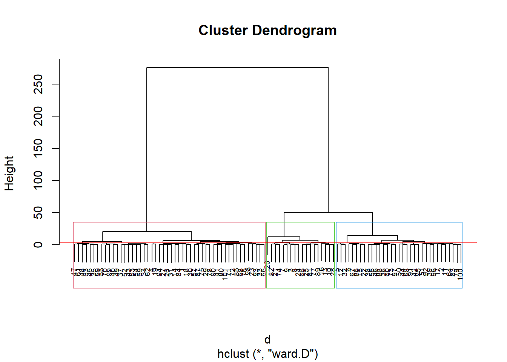
kable(sort(groups)) %>%
kable_styling(latex_options = "striped")| x | |
|---|---|
| 1 | 1 |
| 4 | 1 |
| 14 | 1 |
| 18 | 1 |
| 19 | 1 |
| 23 | 1 |
| 26 | 1 |
| 27 | 1 |
| 29 | 1 |
| 30 | 1 |
| 31 | 1 |
| 33 | 1 |
| 34 | 1 |
| 35 | 1 |
| 37 | 1 |
| 40 | 1 |
| 41 | 1 |
| 43 | 1 |
| 45 | 1 |
| 47 | 1 |
| 48 | 1 |
| 49 | 1 |
| 52 | 1 |
| 53 | 1 |
| 54 | 1 |
| 55 | 1 |
| 57 | 1 |
| 59 | 1 |
| 61 | 1 |
| 62 | 1 |
| 63 | 1 |
| 66 | 1 |
| 68 | 1 |
| 69 | 1 |
| 70 | 1 |
| 71 | 1 |
| 72 | 1 |
| 75 | 1 |
| 76 | 1 |
| 78 | 1 |
| 80 | 1 |
| 84 | 1 |
| 85 | 1 |
| 87 | 1 |
| 90 | 1 |
| 93 | 1 |
| 94 | 1 |
| 98 | 1 |
| 99 | 1 |
| 101 | 1 |
| 2 | 2 |
| 5 | 2 |
| 6 | 2 |
| 11 | 2 |
| 12 | 2 |
| 15 | 2 |
| 17 | 2 |
| 22 | 2 |
| 32 | 2 |
| 36 | 2 |
| 38 | 2 |
| 39 | 2 |
| 42 | 2 |
| 44 | 2 |
| 46 | 2 |
| 50 | 2 |
| 51 | 2 |
| 56 | 2 |
| 58 | 2 |
| 60 | 2 |
| 64 | 2 |
| 67 | 2 |
| 73 | 2 |
| 79 | 2 |
| 83 | 2 |
| 86 | 2 |
| 88 | 2 |
| 91 | 2 |
| 92 | 2 |
| 95 | 2 |
| 96 | 2 |
| 97 | 2 |
| 100 | 2 |
| 3 | 3 |
| 7 | 3 |
| 8 | 3 |
| 9 | 3 |
| 10 | 3 |
| 13 | 3 |
| 16 | 3 |
| 20 | 3 |
| 21 | 3 |
| 24 | 3 |
| 25 | 3 |
| 28 | 3 |
| 65 | 3 |
| 74 | 3 |
| 77 | 3 |
| 81 | 3 |
| 82 | 3 |
| 89 | 3 |
Pelo dendograma, podemos particionar em 3 clusters:
km1 = kmeans(newdata, 3)
p1 = fviz_cluster(km1, data=newdata,
palette = c("#2E9FDF", "#FC4E07", "#E7B800", "#E7B700"),
star.plot=FALSE,
# repel=TRUE,
ggtheme=theme_bw())
p1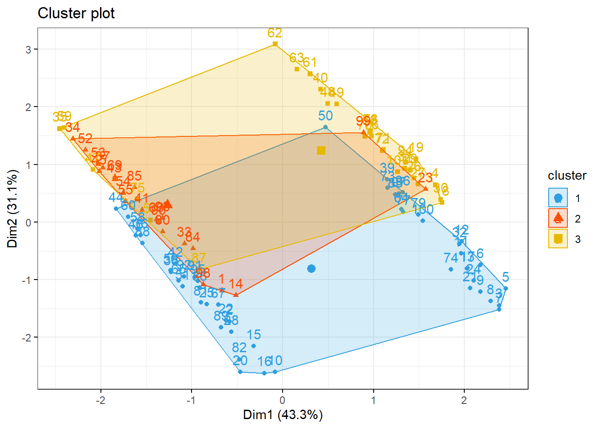
groups = km1$cluster
table(groups, tipofacial$grupo)##
## groups braq dolico meso
## 1 21 12 18
## 2 4 9 9
## 3 8 10 103.5 Análise do conjunto de dados USArrests
Análise de agrupamento para os dados USArrests.
3.5.1 Pacotes
Pacotes necessários para estes exercícios:
library(readxl)
library(tidyverse)
library(readxl)
library(ggthemes)
library(plotly)
library(knitr)
library(kableExtra)
library(factoextra)3.5.2 Conjunto de dados
USArrests é um conjunto de dados contendo estatísticas de prisões por 100.000 habitantes por agressão, assassinato e estupro em cada um dos 50 estados dos EUA em 1973. Também é fornecida a porcentagem da população que vive em áreas urbanas.
summary(USArrests)
require(graphics)
pairs(USArrests, panel = panel.smooth, main = "USArrests data")
## Difference between 'USArrests' and its correction
USArrests["Maryland", "UrbanPop"] # 67 -- the transcription error
UA.C <- USArrests
UA.C["Maryland", "UrbanPop"] <- 76.6
## also +/- 0.5 to restore the original <n>.5 percentages
s5u <- c("Colorado", "Florida", "Mississippi", "Wyoming")
s5d <- c("Nebraska", "Pennsylvania")
UA.C[s5u, "UrbanPop"] <- UA.C[s5u, "UrbanPop"] + 0.5
UA.C[s5d, "UrbanPop"] <- UA.C[s5d, "UrbanPop"] - 0.53.5.3 Agrupamento
df <- scale(USArrests)
summary(df)## Murder Assault UrbanPop Rape
## Min. :-1.6044 Min. :-1.5090 Min. :-2.31714 Min. :-1.4874
## 1st Qu.:-0.8525 1st Qu.:-0.7411 1st Qu.:-0.76271 1st Qu.:-0.6574
## Median :-0.1235 Median :-0.1411 Median : 0.03178 Median :-0.1209
## Mean : 0.0000 Mean : 0.0000 Mean : 0.00000 Mean : 0.0000
## 3rd Qu.: 0.7949 3rd Qu.: 0.9388 3rd Qu.: 0.84354 3rd Qu.: 0.5277
## Max. : 2.2069 Max. : 1.9948 Max. : 1.75892 Max. : 2.6444d <- dist(df, method = "maximum")
grup = hclust(d, method = "ward.D")
groups <- cutree(grup, k=3)
plot(grup, cex = 0.6)
rect.hclust(grup , k = 3, border = 2:6)
abline(h = 3, col = 'red')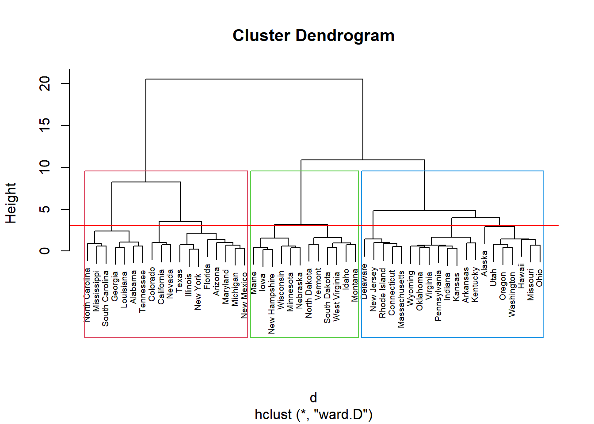
kable(sort(groups)) %>%
kable_styling(latex_options = "striped")| x | |
|---|---|
| Alabama | 1 |
| Arizona | 1 |
| California | 1 |
| Colorado | 1 |
| Florida | 1 |
| Georgia | 1 |
| Illinois | 1 |
| Louisiana | 1 |
| Maryland | 1 |
| Michigan | 1 |
| Mississippi | 1 |
| Nevada | 1 |
| New Mexico | 1 |
| New York | 1 |
| North Carolina | 1 |
| South Carolina | 1 |
| Tennessee | 1 |
| Texas | 1 |
| Alaska | 2 |
| Arkansas | 2 |
| Connecticut | 2 |
| Delaware | 2 |
| Hawaii | 2 |
| Indiana | 2 |
| Kansas | 2 |
| Kentucky | 2 |
| Massachusetts | 2 |
| Missouri | 2 |
| New Jersey | 2 |
| Ohio | 2 |
| Oklahoma | 2 |
| Oregon | 2 |
| Pennsylvania | 2 |
| Rhode Island | 2 |
| Utah | 2 |
| Virginia | 2 |
| Washington | 2 |
| Wyoming | 2 |
| Idaho | 3 |
| Iowa | 3 |
| Maine | 3 |
| Minnesota | 3 |
| Montana | 3 |
| Nebraska | 3 |
| New Hampshire | 3 |
| North Dakota | 3 |
| South Dakota | 3 |
| Vermont | 3 |
| West Virginia | 3 |
| Wisconsin | 3 |
Pelo dendograma podemos infererir uma divisão em 3 clusters:
km1 = kmeans(df, 3, nstart = 25)
km1## K-means clustering with 3 clusters of sizes 20, 17, 13
##
## Cluster means:
## Murder Assault UrbanPop Rape
## 1 1.0049340 1.0138274 0.1975853 0.8469650
## 2 -0.4469795 -0.3465138 0.4788049 -0.2571398
## 3 -0.9615407 -1.1066010 -0.9301069 -0.9667633
##
## Clustering vector:
## Alabama Alaska Arizona Arkansas California
## 1 1 1 2 1
## Colorado Connecticut Delaware Florida Georgia
## 1 2 2 1 1
## Hawaii Idaho Illinois Indiana Iowa
## 2 3 1 2 3
## Kansas Kentucky Louisiana Maine Maryland
## 2 3 1 3 1
## Massachusetts Michigan Minnesota Mississippi Missouri
## 2 1 3 1 1
## Montana Nebraska Nevada New Hampshire New Jersey
## 3 3 1 3 2
## New Mexico New York North Carolina North Dakota Ohio
## 1 1 1 3 2
## Oklahoma Oregon Pennsylvania Rhode Island South Carolina
## 2 2 2 2 1
## South Dakota Tennessee Texas Utah Vermont
## 3 1 1 2 3
## Virginia Washington West Virginia Wisconsin Wyoming
## 2 2 3 3 2
##
## Within cluster sum of squares by cluster:
## [1] 46.74796 19.62285 11.95246
## (between_SS / total_SS = 60.0 %)
##
## Available components:
##
## [1] "cluster" "centers" "totss" "withinss" "tot.withinss"
## [6] "betweenss" "size" "iter" "ifault"aggregate(df, by=list(cluster=km1$cluster), mean)## cluster Murder Assault UrbanPop Rape
## 1 1 1.0049340 1.0138274 0.1975853 0.8469650
## 2 2 -0.4469795 -0.3465138 0.4788049 -0.2571398
## 3 3 -0.9615407 -1.1066010 -0.9301069 -0.9667633p1 = fviz_cluster(km1, data=df,
palette = c("#2E9FDF", "#FC4E07", "#E7B800", "#E7B700"),
star.plot=FALSE,
# repel=TRUE,
ggtheme=theme_bw(),
main = "Particionamento")
p1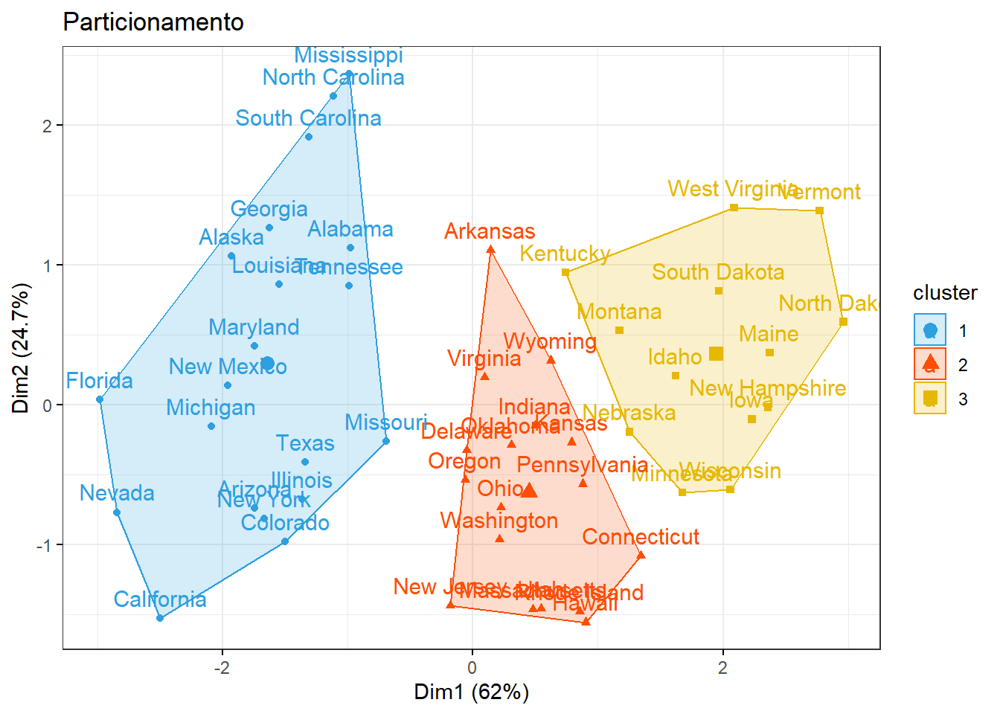